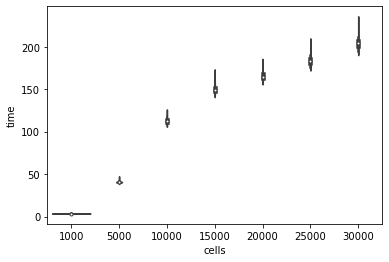
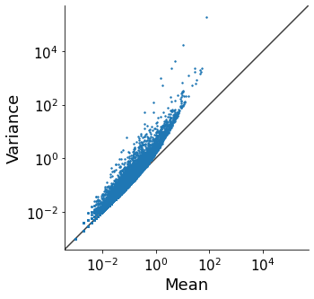
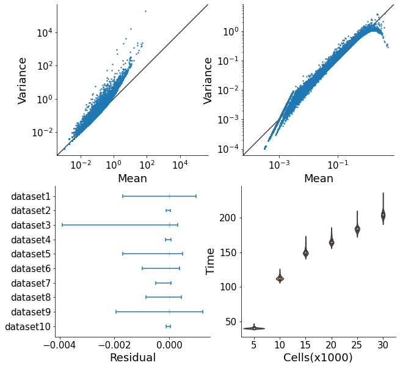
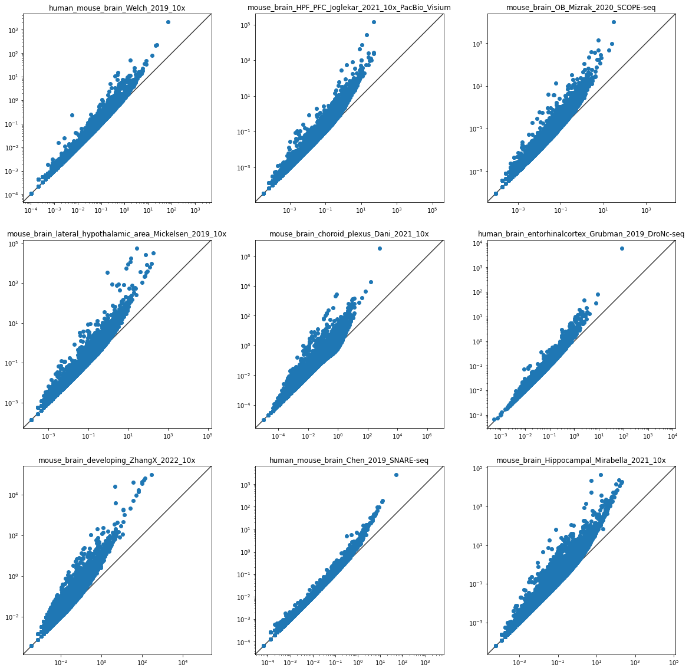
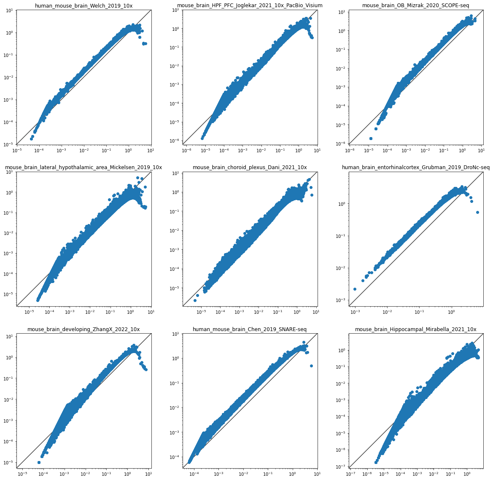
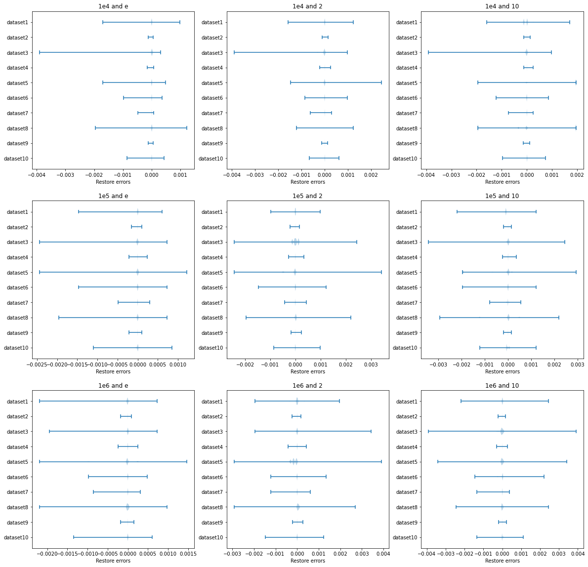
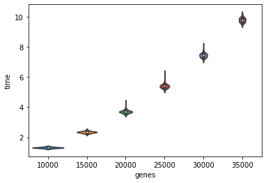
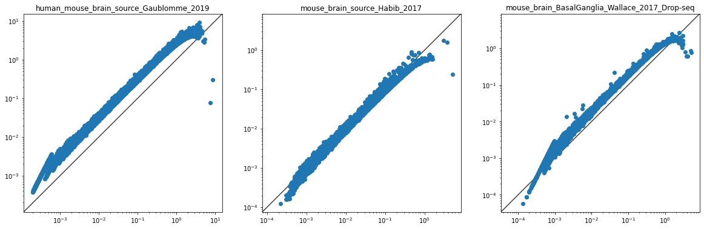
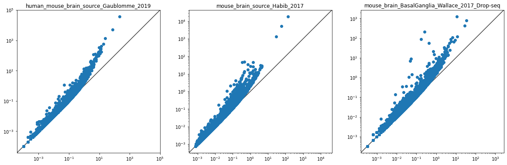

Using matplotlib backend: <object object>
%pylab is deprecated, use %matplotlib inline and import the required libraries.
Populating the interactive namespace from numpy and matplotlibUsing matplotlib backend: <object object>
%pylab is deprecated, use %matplotlib inline and import the required libraries.
Populating the interactive namespace from numpy and matplotlibh5_benchmark=['/home/huang_ziliang/project/brain/data/public/human_brain_organoids_Fiorenzano_2021_10x/h5/human_brain_organoids_Fiorenzano_2021_10x.h5ad',
'/home/huang_ziliang/project/brain/data/public/human_mouse_brain_Welch_2019_10x/h5/GSE126836_SN_MD5534.h5ad',
'/home/huang_ziliang/project/brain/data/public/mouse_brain_HPF_PFC_Joglekar_2021_10x_PacBio_Visium/h5/mouse_brain_HPF_PFC_Joglekar_2021_10x.h5ad',
'/home/huang_ziliang/project/brain/data/public/mouse_brain_OB_Mizrak_2020_SCOPE-seq/h5/mouse_brain_OB_Mizrak_2020_SCOPE-seq.h5ad',
'/home/huang_ziliang/project/brain/data/public/mouse_brain_lateral_hypothalamic_area_Mickelsen_2019_10x/h5/mouse_brain_lateral_hypothalamic_area_Mickelsen_2019_10x.h5ad',
'/home/huang_ziliang/project/brain/data/public/mouse_brain_choroid_plexus_Dani_2021_10x/h5/mouse_brain_choroid_plexus_Dani_2021_10x.h5ad',
'/home/huang_ziliang/project/brain/data/public/human_brain_entorhinalcortex_Grubman_2019_DroNc-seq/h5/human_brain_entorhinalcortex_Grubman_2019_DroNc-seq.h5ad',
'/home/huang_ziliang/project/brain/data/public/mouse_brain_developing_ZhangX_2022_10x/h5/Brain-Young-scRNAseq-rep1.h5ad',
'/home/huang_ziliang/project/brain/data/public/human_mouse_brain_Chen_2019_SNARE-seq/h5/RNA.h5ad',
'/home/huang_ziliang/project/brain/data/public/mouse_brain_Hippocampal_Mirabella_2021_10x/h5/mouse_brain_Hippocampal_Mirabella_2021_10x_in_vivo.h5ad'](123294, 28788) /home/huang_ziliang/project/brain/data/public/human_brain_organoids_Fiorenzano_2021_10x/h5/human_brain_organoids_Fiorenzano_2021_10x.h5ad
(9192, 29445) /home/huang_ziliang/project/brain/data/public/human_mouse_brain_Welch_2019_10x/h5/GSE126836_SN_MD5534.h5ad
(29375, 32452) /home/huang_ziliang/project/brain/data/public/mouse_brain_HPF_PFC_Joglekar_2021_10x_PacBio_Visium/h5/mouse_brain_HPF_PFC_Joglekar_2021_10x.h5ad
(11020, 48528) /home/huang_ziliang/project/brain/data/public/mouse_brain_OB_Mizrak_2020_SCOPE-seq/h5/mouse_brain_OB_Mizrak_2020_SCOPE-seq.h5ad/home/huang_yin/anaconda3/envs/sc/lib/python3.9/site-packages/anndata/_core/anndata.py:1830: UserWarning: Variable names are not unique. To make them unique, call `.var_names_make_unique`.
utils.warn_names_duplicates("var")(7232, 28692) /home/huang_ziliang/project/brain/data/public/mouse_brain_lateral_hypothalamic_area_Mickelsen_2019_10x/h5/mouse_brain_lateral_hypothalamic_area_Mickelsen_2019_10x.h5ad
(98660, 23890) /home/huang_ziliang/project/brain/data/public/mouse_brain_choroid_plexus_Dani_2021_10x/h5/mouse_brain_choroid_plexus_Dani_2021_10x.h5ad
(13214, 10850) /home/huang_ziliang/project/brain/data/public/human_brain_entorhinalcortex_Grubman_2019_DroNc-seq/h5/human_brain_entorhinalcortex_Grubman_2019_DroNc-seq.h5ad
(2751, 31053) /home/huang_ziliang/project/brain/data/public/mouse_brain_developing_ZhangX_2022_10x/h5/Brain-Young-scRNAseq-rep1.h5ad/home/huang_yin/anaconda3/envs/sc/lib/python3.9/site-packages/anndata/_core/anndata.py:1830: UserWarning: Variable names are not unique. To make them unique, call `.var_names_make_unique`.
utils.warn_names_duplicates("var")(15390, 33289) /home/huang_ziliang/project/brain/data/public/human_mouse_brain_Chen_2019_SNARE-seq/h5/RNA.h5ad
(16271, 31053) /home/huang_ziliang/project/brain/data/public/mouse_brain_Hippocampal_Mirabella_2021_10x/h5/mouse_brain_Hippocampal_Mirabella_2021_10x_in_vivo.h5adress={}
for i in h5_benchmark:
ad=sc.read(i)
ad=ad[0:min(ad.shape[0],1000),:]
ad.layers['count']=ad.X.copy()
sc.pp.normalize_total(ad, target_sum=1e4)
sc.pp.log1p(ad)
new_ad=scdenorm(ad)
res=new_ad.X.data-new_ad.layers['count'].data
ress[i.split('/')[-3]]=res
print(abs(res).sum(),ad.shape,i)100%|██████████| 1000/1000 [00:00<00:00, 2763.60it/s]0.09852815 (1000, 29445) /home/huang_ziliang/project/brain/data/public/human_mouse_brain_Welch_2019_10x/h5/GSE126836_SN_MD5534.h5ad100%|██████████| 1000/1000 [00:00<00:00, 2923.69it/s]0.25611508 (1000, 32452) /home/huang_ziliang/project/brain/data/public/mouse_brain_HPF_PFC_Joglekar_2021_10x_PacBio_Visium/h5/mouse_brain_HPF_PFC_Joglekar_2021_10x.h5ad100%|██████████| 1000/1000 [00:00<00:00, 2867.55it/s]1.1155263 (1000, 28788) /home/huang_ziliang/project/brain/data/public/human_brain_organoids_Fiorenzano_2021_10x/h5/human_brain_organoids_Fiorenzano_2021_10x.h5ad/home/huang_yin/anaconda3/envs/sc/lib/python3.9/site-packages/anndata/_core/anndata.py:1830: UserWarning: Variable names are not unique. To make them unique, call `.var_names_make_unique`.
utils.warn_names_duplicates("var")
100%|██████████| 1000/1000 [00:00<00:00, 2946.26it/s]0.11780703 (1000, 48528) /home/huang_ziliang/project/brain/data/public/mouse_brain_OB_Mizrak_2020_SCOPE-seq/h5/mouse_brain_OB_Mizrak_2020_SCOPE-seq.h5ad100%|██████████| 1000/1000 [00:00<00:00, 2883.91it/s]0.4915353 (1000, 28692) /home/huang_ziliang/project/brain/data/public/mouse_brain_lateral_hypothalamic_area_Mickelsen_2019_10x/h5/mouse_brain_lateral_hypothalamic_area_Mickelsen_2019_10x.h5ad100%|██████████| 1000/1000 [00:00<00:00, 2723.79it/s]0.5573318 (1000, 23890) /home/huang_ziliang/project/brain/data/public/mouse_brain_choroid_plexus_Dani_2021_10x/h5/mouse_brain_choroid_plexus_Dani_2021_10x.h5ad100%|██████████| 1000/1000 [00:00<00:00, 3084.23it/s]
/home/huang_yin/anaconda3/envs/sc/lib/python3.9/site-packages/anndata/_core/anndata.py:1830: UserWarning: Variable names are not unique. To make them unique, call `.var_names_make_unique`.
utils.warn_names_duplicates("var")0.0368073 (1000, 10850) /home/huang_ziliang/project/brain/data/public/human_brain_entorhinalcortex_Grubman_2019_DroNc-seq/h5/human_brain_entorhinalcortex_Grubman_2019_DroNc-seq.h5ad100%|██████████| 1000/1000 [00:00<00:00, 3105.67it/s]0.248968 (1000, 31053) /home/huang_ziliang/project/brain/data/public/mouse_brain_developing_ZhangX_2022_10x/h5/Brain-Young-scRNAseq-rep1.h5ad100%|██████████| 1000/1000 [00:00<00:00, 3064.30it/s]0.092314124 (1000, 33289) /home/huang_ziliang/project/brain/data/public/human_mouse_brain_Chen_2019_SNARE-seq/h5/RNA.h5ad100%|██████████| 1000/1000 [00:00<00:00, 2469.34it/s]1.3098155 (1000, 31053) /home/huang_ziliang/project/brain/data/public/mouse_brain_Hippocampal_Mirabella_2021_10x/h5/mouse_brain_Hippocampal_Mirabella_2021_10x_in_vivo.h5ad{'human_mouse_brain_Welch_2019_10x': array([4.7683716e-07, 0.0000000e+00, 0.0000000e+00, ..., 2.3841858e-07,
2.3841858e-07, 0.0000000e+00], dtype=float32),
'mouse_brain_HPF_PFC_Joglekar_2021_10x_PacBio_Visium': array([ 0.0000000e+00, -1.1444092e-05, -7.6293945e-06, ...,
2.3841858e-07, 0.0000000e+00, 0.0000000e+00], dtype=float32),
'human_brain_organoids_Fiorenzano_2021_10x': array([ 0.0000000e+00, 0.0000000e+00, 0.0000000e+00, ...,
-7.6293945e-06, 0.0000000e+00, 0.0000000e+00], dtype=float32),
'mouse_brain_OB_Mizrak_2020_SCOPE-seq': array([0., 0., 0., ..., 0., 0., 0.], dtype=float32),
'mouse_brain_lateral_hypothalamic_area_Mickelsen_2019_10x': array([ 0.0000000e+00, 0.0000000e+00, 0.0000000e+00, ...,
0.0000000e+00, -3.8146973e-06, 0.0000000e+00], dtype=float32),
'mouse_brain_choroid_plexus_Dani_2021_10x': array([0.0000000e+00, 1.9073486e-06, 0.0000000e+00, ..., 0.0000000e+00,
0.0000000e+00, 0.0000000e+00], dtype=float32),
'human_brain_entorhinalcortex_Grubman_2019_DroNc-seq': array([0.0000000e+00, 0.0000000e+00, 0.0000000e+00, ..., 2.3841858e-07,
0.0000000e+00, 0.0000000e+00], dtype=float32),
'mouse_brain_developing_ZhangX_2022_10x': array([ 0.0000000e+00, 0.0000000e+00, 0.0000000e+00, ...,
0.0000000e+00, 0.0000000e+00, -1.9073486e-06], dtype=float32),
'human_mouse_brain_Chen_2019_SNARE-seq': array([ 0.0000000e+00, 0.0000000e+00, 0.0000000e+00, ...,
0.0000000e+00, -2.3841858e-07, 0.0000000e+00], dtype=float32),
'mouse_brain_Hippocampal_Mirabella_2021_10x': array([ 0.0000000e+00, 0.0000000e+00, 0.0000000e+00, ...,
0.0000000e+00, 0.0000000e+00, -4.7683716e-07], dtype=float32)}20000genes X n cells
AnnData object with n_obs × n_vars = 139661 × 68308
obs: 'sample', 'batch'
var: 'gene_ids-0', 'feature_types-0', 'gene_ids-1', 'feature_types-1', 'gene_ids-10', 'feature_types-10', 'gene_ids-11', 'feature_types-11', 'gene_ids-12', 'feature_types-12', 'gene_ids-13', 'feature_types-13', 'gene_ids-14', 'feature_types-14', 'gene_ids-15', 'feature_types-15', 'gene_ids-16', 'feature_types-16', 'gene_ids-17', 'feature_types-17', 'gene_ids-18', 'feature_types-18', 'gene_ids-19', 'feature_types-19', 'gene_ids-2', 'feature_types-2', 'gene_ids-20', 'feature_types-20', 'gene_ids-21', 'feature_types-21', 'gene_ids-22', 'feature_types-22', 'gene_ids-23', 'feature_types-23', 'gene_ids-24', 'feature_types-24', 'gene_ids-25', 'feature_types-25', 'gene_ids-26', 'feature_types-26', 'gene_ids-27', 'feature_types-27', 'gene_ids-28', 'gene_ids-29', 'gene_ids-3', 'feature_types-3', 'gene_ids-30', 'gene_ids-31', 'gene_ids-4', 'feature_types-4', 'gene_ids-5', 'feature_types-5', 'gene_ids-6', 'feature_types-6', 'gene_ids-7', 'feature_types-7', 'gene_ids-8', 'feature_types-8', 'gene_ids-9', 'feature_types-9'[array([35347, 56556, 58377, ..., 26609, 34536, 15664]),
array([49612, 5061, 56380, ..., 55725, 32868, 39613]),
array([53448, 4067, 15778, ..., 32270, 41636, 60688]),
array([27928, 54571, 9606, ..., 48172, 36031, 53703]),
array([46590, 56848, 8378, ..., 32744, 220, 37649]),
array([10544, 29848, 41193, ..., 51200, 30760, 53895])]import time
gene20000=[]
for i,idx in enumerate(r_idx):
print(i)
for cells in cn:
ad=tmp[:cells,idx[2]].copy()
ad.layers['count']=ad.X.copy()
sc.pp.normalize_total(ad, target_sum=1e4)
sc.pp.log1p(ad)
start = time.time()
new_ad=scdenorm(ad)
end = time.time()
res=new_ad.X.data-new_ad.layers['count'].data
gene20000.append([end - start,abs(res).sum(),ad.shape[0],ad.shape[1]])| time | sar | cells | genes | |
|---|---|---|---|---|
| 0 | 190.354524 | 2.905966 | 25000 | 20000 |
| 1 | 211.746687 | 3.161369 | 30000 | 20000 |
| 2 | 184.370135 | 2.154961 | 25000 | 20000 |
| 3 | 201.325987 | 2.329163 | 30000 | 20000 |
| 4 | 180.542773 | 3.135068 | 25000 | 20000 |
| ... | ... | ... | ... | ... |
| 695 | 208.088639 | 2.483778 | 30000 | 20000 |
| 696 | 184.355699 | 2.486861 | 25000 | 20000 |
| 697 | 206.096520 | 2.756315 | 30000 | 20000 |
| 698 | 183.401396 | 2.334402 | 25000 | 20000 |
| 699 | 205.286784 | 2.494473 | 30000 | 20000 |
700 rows × 4 columns
<AxesSubplot:xlabel='cells', ylabel='time'>
def plot_mv(cmean,cvar,ax):
ax.loglog()
ax.scatter(cmean, cvar,s=2)
lims = [
np.min([ax.get_xlim(), ax.get_ylim()]), # min of both axes
np.max([ax.get_xlim(), ax.get_ylim()]), # max of both axes
]
ax.plot(lims, lims, 'k-', alpha=0.75, zorder=0)
ax.set_aspect('equal')
ax.tick_params(axis='both', which='major', labelsize=15)
ax.tick_params(axis='both', which='minor', labelsize=8)
ax.set_xlim(lims)
ax.set_ylim(lims)
ax.spines[['right', 'top']].set_visible(False)
ax.set_xlabel('Mean',fontsize=18)
ax.set_ylabel('Variance',fontsize=18)
return axfigsize(5,5)
fig, ax1 = plt.subplots()
ad=sc.read(h5_benchmark[2])
ad=ad[0:min(ad.shape[0],1000),:]
smtx=ad.X
cmean = np.array(smtx.mean(0))
cvar = np.array(smtx.power(2).mean(0) - cmean ** 2)
#A
plot_mv(cmean,cvar,ax1)
plt.plot()[]
figsize(10,10)
fig, ((ax1, ax2), (ax3, ax4)) = plt.subplots(2,2)
ad=sc.read(h5_benchmark[2])
ad=ad[0:min(ad.shape[0],1000),:]
smtx=ad.X
cmean = np.array(smtx.mean(0))
cvar = np.array(smtx.power(2).mean(0) - cmean ** 2)
#A
plot_mv(cmean,cvar,ax1)
#B
ad.layers['count']=ad.X.copy()
sc.pp.normalize_total(ad, target_sum=1e4)
sc.pp.log1p(ad)
smtx=ad.X
cmean = np.array(smtx.mean(0))
cvar = np.array(smtx.power(2).mean(0) - cmean ** 2)
plot_mv(cmean,cvar,ax2)
#C
ax3.violinplot(ress.values(),vert=False)
ax3.set_yticks([i+1 for i in range(10)])
ax3.set_yticklabels(['dataset'+str(10-i) for i in range(10)])
ax3.tick_params(axis='both', which='major', labelsize=15)
ax3.tick_params(axis='both', which='minor', labelsize=8)
ax3.spines[['right', 'top']].set_visible(False)
ax3.set_xlabel('Residual',fontsize=18)
#ax3.set_ylabel('Dataset',fontsize=18)
#D
#ax4=sns.violinplot(ax=ax4,y="time", x="cells",data=pd.DataFrame(gene20000,columns=['time','sar','cells','genes']))
ax4=sns.violinplot(ax=ax4,y="time", x="cells",data=df[df.cells!=1])
ax4.tick_params(axis='both', which='major', labelsize=15)
ax4.tick_params(axis='both', which='minor', labelsize=8)
ax4.spines[['right', 'top']].set_visible(False)
ax4.set_xlabel('Cells(x1000)',fontsize=18)
ax4.set_ylabel('Time',fontsize=18)
plt.savefig('figures/Figure1.pdf',dpi=600,format='pdf', transparent=True)
plt.show()
fig, axs = plt.subplots(3,3,figsize=(20,20))
axs = axs.ravel()
for i,h5 in enumerate(h5_benchmark[1:]):
ad=sc.read(h5)
smtx=ad.X
cmean = np.array(smtx.mean(0))
cvar = np.array(smtx.power(2).mean(0) - cmean ** 2)
ax=axs[i]
ax.loglog()
ax.scatter(cmean, cvar)
lims = [
np.min([ax.get_xlim(), ax.get_ylim()]), # min of both axes
np.max([ax.get_xlim(), ax.get_ylim()]), # max of both axes
]
# now plot both limits against eachother
ax.plot(lims, lims, 'k-', alpha=0.75, zorder=0)
ax.set_aspect('equal')
ax.set_xlim(lims)
ax.set_ylim(lims)
ax.title.set_text(h5.split('/')[-3])
plt.savefig('figures/Sup_figure_1.pdf',dpi=600,format='pdf', transparent=True)
plt.show()/home/huang_yin/anaconda3/envs/sc/lib/python3.9/site-packages/anndata/_core/anndata.py:1830: UserWarning: Variable names are not unique. To make them unique, call `.var_names_make_unique`.
utils.warn_names_duplicates("var")
/home/huang_yin/anaconda3/envs/sc/lib/python3.9/site-packages/anndata/_core/anndata.py:1830: UserWarning: Variable names are not unique. To make them unique, call `.var_names_make_unique`.
utils.warn_names_duplicates("var")
fig, axs = plt.subplots(3,3,figsize=(20,20))
axs = axs.ravel()
for i,h5 in enumerate(h5_benchmark[1:]):
ad=sc.read(h5)
ad.layers['count']=ad.X.copy()
sc.pp.normalize_total(ad, target_sum=1e4)
sc.pp.log1p(ad)
smtx=ad.X
cmean = np.array(smtx.mean(0))
cvar = np.array(smtx.power(2).mean(0) - cmean ** 2)
ax=axs[i]
ax.loglog()
ax.scatter(cmean, cvar)
lims = [
np.min([ax.get_xlim(), ax.get_ylim()]), # min of both axes
np.max([ax.get_xlim(), ax.get_ylim()]), # max of both axes
]
# now plot both limits against eachother
ax.plot(lims, lims, 'k-', alpha=0.75, zorder=0)
ax.set_aspect('equal')
ax.set_xlim(lims)
ax.set_ylim(lims)
ax.title.set_text(h5.split('/')[-3])
plt.savefig('figures/Sup_figure_2.pdf',dpi=600,format='pdf', transparent=True)
plt.show()/home/huang_yin/anaconda3/envs/sc/lib/python3.9/site-packages/anndata/_core/anndata.py:1830: UserWarning: Variable names are not unique. To make them unique, call `.var_names_make_unique`.
utils.warn_names_duplicates("var")
/home/huang_yin/anaconda3/envs/sc/lib/python3.9/site-packages/anndata/_core/anndata.py:1830: UserWarning: Variable names are not unique. To make them unique, call `.var_names_make_unique`.
utils.warn_names_duplicates("var")
rs=[]
for ts in [1e4,1e5,1e6]:
for b in [np.e,2,10]:
ress={}
for i in h5_benchmark:
ad=sc.read(i)
ad=ad[0:min(ad.shape[0],1000),:]
ad.layers['count']=ad.X.copy()
sc.pp.normalize_total(ad, target_sum=ts)
sc.pp.log1p(ad,base=b)
new_ad=scdenorm(ad)
res=new_ad.X.data-new_ad.layers['count'].data
ress[i.split('/')[-3]]=res
print(abs(res).sum(),ad.shape,i)
rs.append(ress)['1e4 and e',
'1e4 and 2',
'1e4 and 10',
'1e5 and e',
'1e5 and 2',
'1e5 and 10',
'1e6 and e',
'1e6 and 2',
'1e6 and 10']fig, axs = plt.subplots(3,3,figsize=(20,20))
axs = axs.ravel()
for i,ress in enumerate(rs):
ax=axs[i]
ax.violinplot(ress.values(),vert=False)
ax.set_yticks([i+1 for i in range(10)])
ax.set_yticklabels(['dataset'+str(10-i) for i in range(10)])
ax.set_xlabel("Restore errors")
ax.title.set_text(titles[i])
plt.savefig('figures/Sup_figure_3.pdf',dpi=600,format='pdf', transparent=True)
plt.show()
1000 cells X genes
AnnData object with n_obs × n_vars = 139661 × 68308
obs: 'sample', 'batch'
var: 'gene_ids-0', 'feature_types-0', 'gene_ids-1', 'feature_types-1', 'gene_ids-10', 'feature_types-10', 'gene_ids-11', 'feature_types-11', 'gene_ids-12', 'feature_types-12', 'gene_ids-13', 'feature_types-13', 'gene_ids-14', 'feature_types-14', 'gene_ids-15', 'feature_types-15', 'gene_ids-16', 'feature_types-16', 'gene_ids-17', 'feature_types-17', 'gene_ids-18', 'feature_types-18', 'gene_ids-19', 'feature_types-19', 'gene_ids-2', 'feature_types-2', 'gene_ids-20', 'feature_types-20', 'gene_ids-21', 'feature_types-21', 'gene_ids-22', 'feature_types-22', 'gene_ids-23', 'feature_types-23', 'gene_ids-24', 'feature_types-24', 'gene_ids-25', 'feature_types-25', 'gene_ids-26', 'feature_types-26', 'gene_ids-27', 'feature_types-27', 'gene_ids-28', 'gene_ids-29', 'gene_ids-3', 'feature_types-3', 'gene_ids-30', 'gene_ids-31', 'gene_ids-4', 'feature_types-4', 'gene_ids-5', 'feature_types-5', 'gene_ids-6', 'feature_types-6', 'gene_ids-7', 'feature_types-7', 'gene_ids-8', 'feature_types-8', 'gene_ids-9', 'feature_types-9'[array([35347, 56556, 58377, ..., 26609, 34536, 15664]),
array([49612, 5061, 56380, ..., 55725, 32868, 39613]),
array([53448, 4067, 15778, ..., 32270, 41636, 60688]),
array([27928, 54571, 9606, ..., 48172, 36031, 53703]),
array([46590, 56848, 8378, ..., 32744, 220, 37649]),
array([10544, 29848, 41193, ..., 51200, 30760, 53895])]import time
cell1000=[]
for i,idx in enumerate(r_idx):
for genes in idx:
ad=tmp[:1000,genes].copy()
ad.layers['count']=ad.X.copy()
sc.pp.normalize_total(ad, target_sum=1e4)
sc.pp.log1p(ad)
start = time.time()
new_ad=scdenorm(ad)
end = time.time()
res=new_ad.X.data-new_ad.layers['count'].data
cell1000.append([end - start,abs(res).sum(),ad.shape[0],ad.shape[1]])100%|██████████| 1000/1000 [00:00<00:00, 3038.89it/s]
100%|██████████| 1000/1000 [00:00<00:00, 3055.73it/s]
100%|██████████| 1000/1000 [00:00<00:00, 3132.08it/s]
100%|██████████| 1000/1000 [00:00<00:00, 3185.78it/s]
100%|██████████| 1000/1000 [00:00<00:00, 3071.60it/s]
100%|██████████| 1000/1000 [00:00<00:00, 2723.15it/s]
100%|██████████| 1000/1000 [00:00<00:00, 3041.59it/s]
100%|██████████| 1000/1000 [00:00<00:00, 3045.95it/s]
100%|██████████| 1000/1000 [00:00<00:00, 3186.41it/s]
100%|██████████| 1000/1000 [00:00<00:00, 3104.56it/s]
100%|██████████| 1000/1000 [00:00<00:00, 2975.77it/s]
100%|██████████| 1000/1000 [00:00<00:00, 3084.76it/s]
100%|██████████| 1000/1000 [00:00<00:00, 3012.65it/s]
100%|██████████| 1000/1000 [00:00<00:00, 2706.74it/s]
100%|██████████| 1000/1000 [00:00<00:00, 3051.87it/s]
100%|██████████| 1000/1000 [00:00<00:00, 2954.12it/s]
100%|██████████| 1000/1000 [00:00<00:00, 2877.14it/s]
100%|██████████| 1000/1000 [00:00<00:00, 2983.92it/s]
100%|██████████| 1000/1000 [00:00<00:00, 3091.77it/s]
100%|██████████| 1000/1000 [00:00<00:00, 3078.40it/s]
100%|██████████| 1000/1000 [00:00<00:00, 3088.17it/s]
100%|██████████| 1000/1000 [00:00<00:00, 3060.92it/s]
100%|██████████| 1000/1000 [00:00<00:00, 2934.36it/s]
100%|██████████| 1000/1000 [00:00<00:00, 3065.72it/s]
100%|██████████| 1000/1000 [00:00<00:00, 3073.93it/s]
100%|██████████| 1000/1000 [00:00<00:00, 3186.27it/s]
100%|██████████| 1000/1000 [00:00<00:00, 3190.14it/s]
100%|██████████| 1000/1000 [00:00<00:00, 3124.62it/s]
100%|██████████| 1000/1000 [00:00<00:00, 2993.15it/s]
100%|██████████| 1000/1000 [00:00<00:00, 3101.95it/s]
100%|██████████| 1000/1000 [00:00<00:00, 3055.21it/s]
100%|██████████| 1000/1000 [00:00<00:00, 3150.38it/s]
100%|██████████| 1000/1000 [00:00<00:00, 3073.66it/s]
100%|██████████| 1000/1000 [00:00<00:00, 2847.43it/s]
100%|██████████| 1000/1000 [00:00<00:00, 3089.60it/s]
100%|██████████| 1000/1000 [00:00<00:00, 3157.44it/s]
100%|██████████| 1000/1000 [00:00<00:00, 3075.38it/s]
100%|██████████| 1000/1000 [00:00<00:00, 3032.25it/s]
100%|██████████| 1000/1000 [00:00<00:00, 3021.57it/s]
100%|██████████| 1000/1000 [00:00<00:00, 3003.52it/s]
100%|██████████| 1000/1000 [00:00<00:00, 3124.82it/s]
100%|██████████| 1000/1000 [00:00<00:00, 3193.56it/s]
100%|██████████| 1000/1000 [00:00<00:00, 3119.58it/s]
100%|██████████| 1000/1000 [00:00<00:00, 3086.99it/s]
100%|██████████| 1000/1000 [00:00<00:00, 3014.37it/s]
100%|██████████| 1000/1000 [00:00<00:00, 3064.46it/s]
100%|██████████| 1000/1000 [00:00<00:00, 3141.96it/s]
100%|██████████| 1000/1000 [00:00<00:00, 3132.98it/s]
100%|██████████| 1000/1000 [00:00<00:00, 2989.54it/s]
100%|██████████| 1000/1000 [00:00<00:00, 3084.07it/s]
100%|██████████| 1000/1000 [00:00<00:00, 3092.25it/s]
100%|██████████| 1000/1000 [00:00<00:00, 2505.85it/s]
100%|██████████| 1000/1000 [00:00<00:00, 2998.97it/s]
100%|██████████| 1000/1000 [00:00<00:00, 3125.68it/s]
100%|██████████| 1000/1000 [00:00<00:00, 2938.81it/s]
100%|██████████| 1000/1000 [00:00<00:00, 3066.42it/s]
100%|██████████| 1000/1000 [00:00<00:00, 3130.20it/s]
100%|██████████| 1000/1000 [00:00<00:00, 3147.41it/s]
100%|██████████| 1000/1000 [00:00<00:00, 3099.97it/s]
100%|██████████| 1000/1000 [00:00<00:00, 3068.68it/s]
100%|██████████| 1000/1000 [00:00<00:00, 3159.28it/s]
100%|██████████| 1000/1000 [00:00<00:00, 2911.74it/s]
100%|██████████| 1000/1000 [00:00<00:00, 3084.84it/s]
100%|██████████| 1000/1000 [00:00<00:00, 3177.60it/s]
100%|██████████| 1000/1000 [00:00<00:00, 3157.31it/s]
100%|██████████| 1000/1000 [00:00<00:00, 3064.95it/s]
100%|██████████| 1000/1000 [00:00<00:00, 3146.13it/s]
100%|██████████| 1000/1000 [00:00<00:00, 2958.13it/s]
100%|██████████| 1000/1000 [00:00<00:00, 2991.35it/s]
100%|██████████| 1000/1000 [00:00<00:00, 3025.34it/s]
100%|██████████| 1000/1000 [00:00<00:00, 3090.30it/s]
100%|██████████| 1000/1000 [00:00<00:00, 2547.81it/s]
100%|██████████| 1000/1000 [00:00<00:00, 3127.97it/s]
100%|██████████| 1000/1000 [00:00<00:00, 3141.53it/s]
100%|██████████| 1000/1000 [00:00<00:00, 3045.84it/s]
100%|██████████| 1000/1000 [00:00<00:00, 3102.77it/s]
100%|██████████| 1000/1000 [00:00<00:00, 3133.46it/s]
100%|██████████| 1000/1000 [00:00<00:00, 3034.76it/s]
100%|██████████| 1000/1000 [00:00<00:00, 2928.34it/s]
100%|██████████| 1000/1000 [00:00<00:00, 3120.62it/s]
100%|██████████| 1000/1000 [00:00<00:00, 3110.74it/s]
100%|██████████| 1000/1000 [00:00<00:00, 3031.47it/s]
100%|██████████| 1000/1000 [00:00<00:00, 3132.94it/s]
100%|██████████| 1000/1000 [00:00<00:00, 3159.14it/s]
100%|██████████| 1000/1000 [00:00<00:00, 3113.48it/s]
100%|██████████| 1000/1000 [00:00<00:00, 3152.43it/s]
100%|██████████| 1000/1000 [00:00<00:00, 3101.33it/s]
100%|██████████| 1000/1000 [00:00<00:00, 3098.02it/s]
100%|██████████| 1000/1000 [00:00<00:00, 3184.92it/s]
100%|██████████| 1000/1000 [00:00<00:00, 3149.37it/s]
100%|██████████| 1000/1000 [00:00<00:00, 3168.47it/s]
100%|██████████| 1000/1000 [00:00<00:00, 2895.50it/s]
100%|██████████| 1000/1000 [00:00<00:00, 2989.57it/s]
100%|██████████| 1000/1000 [00:00<00:00, 3067.00it/s]
100%|██████████| 1000/1000 [00:00<00:00, 3078.43it/s]
100%|██████████| 1000/1000 [00:00<00:00, 3110.91it/s]
100%|██████████| 1000/1000 [00:00<00:00, 3156.36it/s]
100%|██████████| 1000/1000 [00:00<00:00, 2952.98it/s]
100%|██████████| 1000/1000 [00:00<00:00, 3102.55it/s]
100%|██████████| 1000/1000 [00:00<00:00, 2578.96it/s]
100%|██████████| 1000/1000 [00:00<00:00, 3154.61it/s]
100%|██████████| 1000/1000 [00:00<00:00, 3084.15it/s]
100%|██████████| 1000/1000 [00:00<00:00, 3085.85it/s]
100%|██████████| 1000/1000 [00:00<00:00, 3095.50it/s]
100%|██████████| 1000/1000 [00:00<00:00, 3121.15it/s]
100%|██████████| 1000/1000 [00:00<00:00, 3118.74it/s]
100%|██████████| 1000/1000 [00:00<00:00, 3019.60it/s]
100%|██████████| 1000/1000 [00:00<00:00, 3099.39it/s]
100%|██████████| 1000/1000 [00:00<00:00, 3144.36it/s]
100%|██████████| 1000/1000 [00:00<00:00, 2981.28it/s]
100%|██████████| 1000/1000 [00:00<00:00, 2945.20it/s]
100%|██████████| 1000/1000 [00:00<00:00, 3142.07it/s]
100%|██████████| 1000/1000 [00:00<00:00, 3109.20it/s]
100%|██████████| 1000/1000 [00:00<00:00, 3161.63it/s]
100%|██████████| 1000/1000 [00:00<00:00, 3114.30it/s]
100%|██████████| 1000/1000 [00:00<00:00, 3158.73it/s]
100%|██████████| 1000/1000 [00:00<00:00, 3065.74it/s]
100%|██████████| 1000/1000 [00:00<00:00, 3099.95it/s]
100%|██████████| 1000/1000 [00:00<00:00, 3112.33it/s]
100%|██████████| 1000/1000 [00:00<00:00, 3093.21it/s]
100%|██████████| 1000/1000 [00:00<00:00, 3097.33it/s]
100%|██████████| 1000/1000 [00:00<00:00, 3042.83it/s]
100%|██████████| 1000/1000 [00:00<00:00, 3077.88it/s]
100%|██████████| 1000/1000 [00:00<00:00, 3049.20it/s]
100%|██████████| 1000/1000 [00:00<00:00, 3086.73it/s]
100%|██████████| 1000/1000 [00:00<00:00, 3065.70it/s]
100%|██████████| 1000/1000 [00:00<00:00, 3033.60it/s]
100%|██████████| 1000/1000 [00:00<00:00, 3100.66it/s]
100%|██████████| 1000/1000 [00:00<00:00, 2643.33it/s]
100%|██████████| 1000/1000 [00:00<00:00, 3132.20it/s]
100%|██████████| 1000/1000 [00:00<00:00, 3148.56it/s]
100%|██████████| 1000/1000 [00:00<00:00, 3165.00it/s]
100%|██████████| 1000/1000 [00:00<00:00, 3127.77it/s]
100%|██████████| 1000/1000 [00:00<00:00, 3126.44it/s]
100%|██████████| 1000/1000 [00:00<00:00, 3116.53it/s]
100%|██████████| 1000/1000 [00:00<00:00, 3132.11it/s]
100%|██████████| 1000/1000 [00:00<00:00, 3085.45it/s]
100%|██████████| 1000/1000 [00:00<00:00, 3105.70it/s]
100%|██████████| 1000/1000 [00:00<00:00, 3083.86it/s]
100%|██████████| 1000/1000 [00:00<00:00, 3143.96it/s]
100%|██████████| 1000/1000 [00:00<00:00, 3154.66it/s]
100%|██████████| 1000/1000 [00:00<00:00, 3108.55it/s]
100%|██████████| 1000/1000 [00:00<00:00, 3060.45it/s]
100%|██████████| 1000/1000 [00:00<00:00, 3067.57it/s]
100%|██████████| 1000/1000 [00:00<00:00, 3141.80it/s]
100%|██████████| 1000/1000 [00:00<00:00, 3137.43it/s]
100%|██████████| 1000/1000 [00:00<00:00, 3071.52it/s]
100%|██████████| 1000/1000 [00:00<00:00, 3132.07it/s]
100%|██████████| 1000/1000 [00:00<00:00, 2942.69it/s]
100%|██████████| 1000/1000 [00:00<00:00, 3058.34it/s]
100%|██████████| 1000/1000 [00:00<00:00, 3082.56it/s]
100%|██████████| 1000/1000 [00:00<00:00, 3153.11it/s]
100%|██████████| 1000/1000 [00:00<00:00, 3155.55it/s]
100%|██████████| 1000/1000 [00:00<00:00, 2971.71it/s]
100%|██████████| 1000/1000 [00:00<00:00, 3112.46it/s]
100%|██████████| 1000/1000 [00:00<00:00, 3054.17it/s]
100%|██████████| 1000/1000 [00:00<00:00, 2704.03it/s]
100%|██████████| 1000/1000 [00:00<00:00, 2851.06it/s]
100%|██████████| 1000/1000 [00:00<00:00, 3001.68it/s]
100%|██████████| 1000/1000 [00:00<00:00, 3092.84it/s]
100%|██████████| 1000/1000 [00:00<00:00, 3164.23it/s]
100%|██████████| 1000/1000 [00:00<00:00, 3122.18it/s]
100%|██████████| 1000/1000 [00:00<00:00, 3011.63it/s]
100%|██████████| 1000/1000 [00:00<00:00, 3072.28it/s]
100%|██████████| 1000/1000 [00:00<00:00, 3127.48it/s]
100%|██████████| 1000/1000 [00:00<00:00, 3177.79it/s]
100%|██████████| 1000/1000 [00:00<00:00, 2970.56it/s]
100%|██████████| 1000/1000 [00:00<00:00, 3097.09it/s]
100%|██████████| 1000/1000 [00:00<00:00, 3133.14it/s]
100%|██████████| 1000/1000 [00:00<00:00, 3166.35it/s]
100%|██████████| 1000/1000 [00:00<00:00, 2956.40it/s]
100%|██████████| 1000/1000 [00:00<00:00, 3078.78it/s]
100%|██████████| 1000/1000 [00:00<00:00, 2908.39it/s]
100%|██████████| 1000/1000 [00:00<00:00, 3088.53it/s]
100%|██████████| 1000/1000 [00:00<00:00, 3022.72it/s]
100%|██████████| 1000/1000 [00:00<00:00, 3190.83it/s]
100%|██████████| 1000/1000 [00:00<00:00, 3152.69it/s]
100%|██████████| 1000/1000 [00:00<00:00, 3049.78it/s]
100%|██████████| 1000/1000 [00:00<00:00, 3076.40it/s]
100%|██████████| 1000/1000 [00:00<00:00, 3107.38it/s]
100%|██████████| 1000/1000 [00:00<00:00, 3114.66it/s]
100%|██████████| 1000/1000 [00:00<00:00, 3003.29it/s]
100%|██████████| 1000/1000 [00:00<00:00, 3147.23it/s]
100%|██████████| 1000/1000 [00:00<00:00, 3089.79it/s]
100%|██████████| 1000/1000 [00:00<00:00, 3099.31it/s]
100%|██████████| 1000/1000 [00:00<00:00, 3139.53it/s]
100%|██████████| 1000/1000 [00:00<00:00, 3161.91it/s]
100%|██████████| 1000/1000 [00:00<00:00, 2981.90it/s]
100%|██████████| 1000/1000 [00:00<00:00, 3018.65it/s]
100%|██████████| 1000/1000 [00:00<00:00, 3036.50it/s]
100%|██████████| 1000/1000 [00:00<00:00, 3141.46it/s]
100%|██████████| 1000/1000 [00:00<00:00, 2984.66it/s]
100%|██████████| 1000/1000 [00:00<00:00, 3049.74it/s]
100%|██████████| 1000/1000 [00:00<00:00, 3092.85it/s]
100%|██████████| 1000/1000 [00:00<00:00, 3120.44it/s]
100%|██████████| 1000/1000 [00:00<00:00, 2739.90it/s]
100%|██████████| 1000/1000 [00:00<00:00, 3029.51it/s]
100%|██████████| 1000/1000 [00:00<00:00, 3105.39it/s]
100%|██████████| 1000/1000 [00:00<00:00, 2967.08it/s]
100%|██████████| 1000/1000 [00:00<00:00, 3104.34it/s]
100%|██████████| 1000/1000 [00:00<00:00, 3092.75it/s]
100%|██████████| 1000/1000 [00:00<00:00, 3134.03it/s]
100%|██████████| 1000/1000 [00:00<00:00, 2972.98it/s]
100%|██████████| 1000/1000 [00:00<00:00, 3061.05it/s]
100%|██████████| 1000/1000 [00:00<00:00, 3098.14it/s]
100%|██████████| 1000/1000 [00:00<00:00, 3176.27it/s]
100%|██████████| 1000/1000 [00:00<00:00, 3123.82it/s]
100%|██████████| 1000/1000 [00:00<00:00, 3185.23it/s]
100%|██████████| 1000/1000 [00:00<00:00, 2836.92it/s]
100%|██████████| 1000/1000 [00:00<00:00, 3091.03it/s]
100%|██████████| 1000/1000 [00:00<00:00, 2995.56it/s]
100%|██████████| 1000/1000 [00:00<00:00, 3072.90it/s]
100%|██████████| 1000/1000 [00:00<00:00, 2723.89it/s]
100%|██████████| 1000/1000 [00:00<00:00, 3033.54it/s]
100%|██████████| 1000/1000 [00:00<00:00, 3101.99it/s]
100%|██████████| 1000/1000 [00:00<00:00, 3139.27it/s]
100%|██████████| 1000/1000 [00:00<00:00, 3072.78it/s]
100%|██████████| 1000/1000 [00:00<00:00, 3058.72it/s]
100%|██████████| 1000/1000 [00:00<00:00, 3122.88it/s]
100%|██████████| 1000/1000 [00:00<00:00, 2926.67it/s]
100%|██████████| 1000/1000 [00:00<00:00, 2939.75it/s]
100%|██████████| 1000/1000 [00:00<00:00, 2837.97it/s]
100%|██████████| 1000/1000 [00:00<00:00, 2315.05it/s]
100%|██████████| 1000/1000 [00:00<00:00, 3033.07it/s]
100%|██████████| 1000/1000 [00:00<00:00, 2988.60it/s]
100%|██████████| 1000/1000 [00:00<00:00, 3097.42it/s]
100%|██████████| 1000/1000 [00:00<00:00, 3037.38it/s]
100%|██████████| 1000/1000 [00:00<00:00, 3141.75it/s]
100%|██████████| 1000/1000 [00:00<00:00, 3149.65it/s]
100%|██████████| 1000/1000 [00:00<00:00, 2317.00it/s]
100%|██████████| 1000/1000 [00:00<00:00, 2912.86it/s]
100%|██████████| 1000/1000 [00:00<00:00, 3153.85it/s]
100%|██████████| 1000/1000 [00:00<00:00, 3045.21it/s]
100%|██████████| 1000/1000 [00:00<00:00, 3146.18it/s]
100%|██████████| 1000/1000 [00:00<00:00, 3122.75it/s]
100%|██████████| 1000/1000 [00:00<00:00, 3057.02it/s]
100%|██████████| 1000/1000 [00:00<00:00, 3023.28it/s]
100%|██████████| 1000/1000 [00:00<00:00, 3092.85it/s]
100%|██████████| 1000/1000 [00:00<00:00, 3194.97it/s]
100%|██████████| 1000/1000 [00:00<00:00, 3186.35it/s]
100%|██████████| 1000/1000 [00:00<00:00, 3171.56it/s]
100%|██████████| 1000/1000 [00:00<00:00, 3176.29it/s]
100%|██████████| 1000/1000 [00:00<00:00, 3124.24it/s]
100%|██████████| 1000/1000 [00:00<00:00, 3150.43it/s]
100%|██████████| 1000/1000 [00:00<00:00, 3037.26it/s]
100%|██████████| 1000/1000 [00:00<00:00, 3062.09it/s]
100%|██████████| 1000/1000 [00:00<00:00, 3081.20it/s]
100%|██████████| 1000/1000 [00:00<00:00, 3109.54it/s]
100%|██████████| 1000/1000 [00:00<00:00, 3127.67it/s]
100%|██████████| 1000/1000 [00:00<00:00, 3079.93it/s]
100%|██████████| 1000/1000 [00:00<00:00, 3181.35it/s]
100%|██████████| 1000/1000 [00:00<00:00, 2978.85it/s]
100%|██████████| 1000/1000 [00:00<00:00, 3068.71it/s]
100%|██████████| 1000/1000 [00:00<00:00, 3113.12it/s]
100%|██████████| 1000/1000 [00:00<00:00, 3121.66it/s]
100%|██████████| 1000/1000 [00:00<00:00, 3132.19it/s]
100%|██████████| 1000/1000 [00:00<00:00, 2901.61it/s]
100%|██████████| 1000/1000 [00:00<00:00, 3104.31it/s]
100%|██████████| 1000/1000 [00:00<00:00, 3098.45it/s]
100%|██████████| 1000/1000 [00:00<00:00, 3058.66it/s]
100%|██████████| 1000/1000 [00:00<00:00, 3181.27it/s]
100%|██████████| 1000/1000 [00:00<00:00, 3122.85it/s]
100%|██████████| 1000/1000 [00:00<00:00, 3120.82it/s]
100%|██████████| 1000/1000 [00:00<00:00, 3069.74it/s]
100%|██████████| 1000/1000 [00:00<00:00, 3057.35it/s]
100%|██████████| 1000/1000 [00:00<00:00, 3128.30it/s]
100%|██████████| 1000/1000 [00:00<00:00, 3147.64it/s]
100%|██████████| 1000/1000 [00:00<00:00, 3153.31it/s]
100%|██████████| 1000/1000 [00:00<00:00, 3076.66it/s]
100%|██████████| 1000/1000 [00:00<00:00, 3090.50it/s]
100%|██████████| 1000/1000 [00:00<00:00, 2997.38it/s]
100%|██████████| 1000/1000 [00:00<00:00, 3130.47it/s]
100%|██████████| 1000/1000 [00:00<00:00, 3133.95it/s]
100%|██████████| 1000/1000 [00:00<00:00, 3003.43it/s]
100%|██████████| 1000/1000 [00:00<00:00, 3146.40it/s]
100%|██████████| 1000/1000 [00:00<00:00, 3117.55it/s]
100%|██████████| 1000/1000 [00:00<00:00, 3175.47it/s]
100%|██████████| 1000/1000 [00:00<00:00, 2921.89it/s]
100%|██████████| 1000/1000 [00:00<00:00, 3093.85it/s]
100%|██████████| 1000/1000 [00:00<00:00, 3169.21it/s]
100%|██████████| 1000/1000 [00:00<00:00, 2989.51it/s]
100%|██████████| 1000/1000 [00:00<00:00, 3123.07it/s]
100%|██████████| 1000/1000 [00:00<00:00, 3183.87it/s]
100%|██████████| 1000/1000 [00:00<00:00, 3072.37it/s]
100%|██████████| 1000/1000 [00:00<00:00, 3063.56it/s]
100%|██████████| 1000/1000 [00:00<00:00, 3069.01it/s]
100%|██████████| 1000/1000 [00:00<00:00, 3165.96it/s]
100%|██████████| 1000/1000 [00:00<00:00, 3124.78it/s]
100%|██████████| 1000/1000 [00:00<00:00, 3066.32it/s]
100%|██████████| 1000/1000 [00:00<00:00, 3102.51it/s]
100%|██████████| 1000/1000 [00:00<00:00, 2956.03it/s]
100%|██████████| 1000/1000 [00:00<00:00, 2925.20it/s]
100%|██████████| 1000/1000 [00:00<00:00, 2922.08it/s]
100%|██████████| 1000/1000 [00:00<00:00, 3037.12it/s]
100%|██████████| 1000/1000 [00:00<00:00, 3140.29it/s]
100%|██████████| 1000/1000 [00:00<00:00, 2942.64it/s]
100%|██████████| 1000/1000 [00:00<00:00, 3092.95it/s]
100%|██████████| 1000/1000 [00:00<00:00, 3125.36it/s]
100%|██████████| 1000/1000 [00:00<00:00, 3093.05it/s]
100%|██████████| 1000/1000 [00:00<00:00, 3094.52it/s]
100%|██████████| 1000/1000 [00:00<00:00, 3082.21it/s]
100%|██████████| 1000/1000 [00:00<00:00, 3180.86it/s]
100%|██████████| 1000/1000 [00:00<00:00, 3105.99it/s]
100%|██████████| 1000/1000 [00:00<00:00, 3125.93it/s]
100%|██████████| 1000/1000 [00:00<00:00, 3119.04it/s]
100%|██████████| 1000/1000 [00:00<00:00, 3151.16it/s]
100%|██████████| 1000/1000 [00:00<00:00, 3090.80it/s]
100%|██████████| 1000/1000 [00:00<00:00, 3013.08it/s]
100%|██████████| 1000/1000 [00:00<00:00, 2522.50it/s]
100%|██████████| 1000/1000 [00:00<00:00, 3082.76it/s]
100%|██████████| 1000/1000 [00:00<00:00, 2981.20it/s]
100%|██████████| 1000/1000 [00:00<00:00, 3002.67it/s]
100%|██████████| 1000/1000 [00:00<00:00, 3189.48it/s]
100%|██████████| 1000/1000 [00:00<00:00, 2890.36it/s]
100%|██████████| 1000/1000 [00:00<00:00, 3182.28it/s]
100%|██████████| 1000/1000 [00:00<00:00, 3177.07it/s]
100%|██████████| 1000/1000 [00:00<00:00, 3127.83it/s]
100%|██████████| 1000/1000 [00:00<00:00, 2583.29it/s]
100%|██████████| 1000/1000 [00:00<00:00, 3184.80it/s]
100%|██████████| 1000/1000 [00:00<00:00, 3185.65it/s]
100%|██████████| 1000/1000 [00:00<00:00, 3136.86it/s]
100%|██████████| 1000/1000 [00:00<00:00, 2992.22it/s]
100%|██████████| 1000/1000 [00:00<00:00, 3088.79it/s]
100%|██████████| 1000/1000 [00:00<00:00, 3067.01it/s]
100%|██████████| 1000/1000 [00:00<00:00, 3140.88it/s]
100%|██████████| 1000/1000 [00:00<00:00, 2844.10it/s]
100%|██████████| 1000/1000 [00:00<00:00, 2984.62it/s]
100%|██████████| 1000/1000 [00:00<00:00, 3052.60it/s]
100%|██████████| 1000/1000 [00:00<00:00, 3050.58it/s]
100%|██████████| 1000/1000 [00:00<00:00, 3129.42it/s]
100%|██████████| 1000/1000 [00:00<00:00, 3141.29it/s]
100%|██████████| 1000/1000 [00:00<00:00, 3002.41it/s]
100%|██████████| 1000/1000 [00:00<00:00, 3015.43it/s]
100%|██████████| 1000/1000 [00:00<00:00, 3063.81it/s]
100%|██████████| 1000/1000 [00:00<00:00, 3121.76it/s]
100%|██████████| 1000/1000 [00:00<00:00, 3198.06it/s]
100%|██████████| 1000/1000 [00:00<00:00, 3180.63it/s]
100%|██████████| 1000/1000 [00:00<00:00, 2984.38it/s]
100%|██████████| 1000/1000 [00:00<00:00, 3105.33it/s]
100%|██████████| 1000/1000 [00:00<00:00, 3167.06it/s]
100%|██████████| 1000/1000 [00:00<00:00, 2891.61it/s]
100%|██████████| 1000/1000 [00:00<00:00, 2483.93it/s]
100%|██████████| 1000/1000 [00:00<00:00, 3151.66it/s]
100%|██████████| 1000/1000 [00:00<00:00, 3097.24it/s]
100%|██████████| 1000/1000 [00:00<00:00, 3239.23it/s]
100%|██████████| 1000/1000 [00:00<00:00, 3051.25it/s]
100%|██████████| 1000/1000 [00:00<00:00, 3122.67it/s]
100%|██████████| 1000/1000 [00:00<00:00, 3126.12it/s]
100%|██████████| 1000/1000 [00:00<00:00, 3082.25it/s]
100%|██████████| 1000/1000 [00:00<00:00, 3042.34it/s]
100%|██████████| 1000/1000 [00:00<00:00, 3106.07it/s]
100%|██████████| 1000/1000 [00:00<00:00, 3021.13it/s]
100%|██████████| 1000/1000 [00:00<00:00, 3190.21it/s]
100%|██████████| 1000/1000 [00:00<00:00, 3146.05it/s]
100%|██████████| 1000/1000 [00:00<00:00, 2902.90it/s]
100%|██████████| 1000/1000 [00:00<00:00, 2961.30it/s]
100%|██████████| 1000/1000 [00:00<00:00, 3103.42it/s]
100%|██████████| 1000/1000 [00:00<00:00, 3102.68it/s]
100%|██████████| 1000/1000 [00:00<00:00, 3056.10it/s]
100%|██████████| 1000/1000 [00:00<00:00, 3108.15it/s]
100%|██████████| 1000/1000 [00:00<00:00, 2949.32it/s]
100%|██████████| 1000/1000 [00:00<00:00, 3180.74it/s]
100%|██████████| 1000/1000 [00:00<00:00, 3120.11it/s]
100%|██████████| 1000/1000 [00:00<00:00, 3071.61it/s]
100%|██████████| 1000/1000 [00:00<00:00, 3072.08it/s]
100%|██████████| 1000/1000 [00:00<00:00, 3114.44it/s]
100%|██████████| 1000/1000 [00:00<00:00, 3116.86it/s]
100%|██████████| 1000/1000 [00:00<00:00, 3012.21it/s]
100%|██████████| 1000/1000 [00:00<00:00, 3116.26it/s]
100%|██████████| 1000/1000 [00:00<00:00, 2659.78it/s]
100%|██████████| 1000/1000 [00:00<00:00, 2916.23it/s]
100%|██████████| 1000/1000 [00:00<00:00, 3163.62it/s]
100%|██████████| 1000/1000 [00:00<00:00, 3107.05it/s]
100%|██████████| 1000/1000 [00:00<00:00, 3073.21it/s]
100%|██████████| 1000/1000 [00:00<00:00, 3165.33it/s]
100%|██████████| 1000/1000 [00:00<00:00, 2952.77it/s]
100%|██████████| 1000/1000 [00:00<00:00, 3096.42it/s]
100%|██████████| 1000/1000 [00:00<00:00, 3163.37it/s]
100%|██████████| 1000/1000 [00:00<00:00, 2981.34it/s]
100%|██████████| 1000/1000 [00:00<00:00, 3104.00it/s]
100%|██████████| 1000/1000 [00:00<00:00, 3044.90it/s]
100%|██████████| 1000/1000 [00:00<00:00, 3167.87it/s]
100%|██████████| 1000/1000 [00:00<00:00, 2988.89it/s]
100%|██████████| 1000/1000 [00:00<00:00, 3104.41it/s]
100%|██████████| 1000/1000 [00:00<00:00, 3092.58it/s]
100%|██████████| 1000/1000 [00:00<00:00, 2918.28it/s]
100%|██████████| 1000/1000 [00:00<00:00, 3059.62it/s]
100%|██████████| 1000/1000 [00:00<00:00, 3092.81it/s]
100%|██████████| 1000/1000 [00:00<00:00, 3108.94it/s]
100%|██████████| 1000/1000 [00:00<00:00, 3056.22it/s]
100%|██████████| 1000/1000 [00:00<00:00, 2989.86it/s]
100%|██████████| 1000/1000 [00:00<00:00, 3080.36it/s]
100%|██████████| 1000/1000 [00:00<00:00, 3134.65it/s]
100%|██████████| 1000/1000 [00:00<00:00, 2969.38it/s]
100%|██████████| 1000/1000 [00:00<00:00, 3132.85it/s]
100%|██████████| 1000/1000 [00:00<00:00, 3113.03it/s]
100%|██████████| 1000/1000 [00:00<00:00, 3165.34it/s]
100%|██████████| 1000/1000 [00:00<00:00, 3025.62it/s]
100%|██████████| 1000/1000 [00:00<00:00, 3086.39it/s]
100%|██████████| 1000/1000 [00:00<00:00, 3154.11it/s]
100%|██████████| 1000/1000 [00:00<00:00, 3004.57it/s]
100%|██████████| 1000/1000 [00:00<00:00, 3093.87it/s]
100%|██████████| 1000/1000 [00:00<00:00, 3100.98it/s]
100%|██████████| 1000/1000 [00:00<00:00, 3048.47it/s]
100%|██████████| 1000/1000 [00:00<00:00, 3098.70it/s]
100%|██████████| 1000/1000 [00:00<00:00, 3107.32it/s]
100%|██████████| 1000/1000 [00:00<00:00, 3103.88it/s]
100%|██████████| 1000/1000 [00:00<00:00, 2988.36it/s]
100%|██████████| 1000/1000 [00:00<00:00, 3132.79it/s]
100%|██████████| 1000/1000 [00:00<00:00, 3128.45it/s]
100%|██████████| 1000/1000 [00:00<00:00, 2897.52it/s]
100%|██████████| 1000/1000 [00:00<00:00, 3167.31it/s]
100%|██████████| 1000/1000 [00:00<00:00, 3121.39it/s]
100%|██████████| 1000/1000 [00:00<00:00, 3065.85it/s]
100%|██████████| 1000/1000 [00:00<00:00, 3094.61it/s]
100%|██████████| 1000/1000 [00:00<00:00, 2896.90it/s]
100%|██████████| 1000/1000 [00:00<00:00, 3098.48it/s]
100%|██████████| 1000/1000 [00:00<00:00, 3040.25it/s]
100%|██████████| 1000/1000 [00:00<00:00, 2558.80it/s]
100%|██████████| 1000/1000 [00:00<00:00, 3035.90it/s]
100%|██████████| 1000/1000 [00:00<00:00, 3086.34it/s]
100%|██████████| 1000/1000 [00:00<00:00, 3093.44it/s]
100%|██████████| 1000/1000 [00:00<00:00, 3052.10it/s]
100%|██████████| 1000/1000 [00:00<00:00, 3130.70it/s]
100%|██████████| 1000/1000 [00:00<00:00, 3059.38it/s]
100%|██████████| 1000/1000 [00:00<00:00, 3122.53it/s]
100%|██████████| 1000/1000 [00:00<00:00, 3147.40it/s]
100%|██████████| 1000/1000 [00:00<00:00, 3098.62it/s]
100%|██████████| 1000/1000 [00:00<00:00, 2968.88it/s]
100%|██████████| 1000/1000 [00:00<00:00, 3115.96it/s]
100%|██████████| 1000/1000 [00:00<00:00, 3095.82it/s]
100%|██████████| 1000/1000 [00:00<00:00, 3102.26it/s]
100%|██████████| 1000/1000 [00:00<00:00, 3153.37it/s]
100%|██████████| 1000/1000 [00:00<00:00, 2957.03it/s]
100%|██████████| 1000/1000 [00:00<00:00, 3060.23it/s]
100%|██████████| 1000/1000 [00:00<00:00, 2412.06it/s]
100%|██████████| 1000/1000 [00:00<00:00, 3124.30it/s]
100%|██████████| 1000/1000 [00:00<00:00, 3100.85it/s]
100%|██████████| 1000/1000 [00:00<00:00, 3071.90it/s]
100%|██████████| 1000/1000 [00:00<00:00, 2561.64it/s]
100%|██████████| 1000/1000 [00:00<00:00, 3127.52it/s]
100%|██████████| 1000/1000 [00:00<00:00, 3099.70it/s]
100%|██████████| 1000/1000 [00:00<00:00, 3166.68it/s]
100%|██████████| 1000/1000 [00:00<00:00, 2978.23it/s]
100%|██████████| 1000/1000 [00:00<00:00, 3054.01it/s]
100%|██████████| 1000/1000 [00:00<00:00, 3110.81it/s]
100%|██████████| 1000/1000 [00:00<00:00, 3089.23it/s]
100%|██████████| 1000/1000 [00:00<00:00, 3137.65it/s]
100%|██████████| 1000/1000 [00:00<00:00, 3114.45it/s]
100%|██████████| 1000/1000 [00:00<00:00, 2938.34it/s]
100%|██████████| 1000/1000 [00:00<00:00, 3135.68it/s]
100%|██████████| 1000/1000 [00:00<00:00, 3161.82it/s]
100%|██████████| 1000/1000 [00:00<00:00, 3154.04it/s]
100%|██████████| 1000/1000 [00:00<00:00, 2954.04it/s]
100%|██████████| 1000/1000 [00:00<00:00, 2941.38it/s]
100%|██████████| 1000/1000 [00:00<00:00, 2835.64it/s]
100%|██████████| 1000/1000 [00:00<00:00, 2941.49it/s]
100%|██████████| 1000/1000 [00:00<00:00, 3059.30it/s]
100%|██████████| 1000/1000 [00:00<00:00, 3142.47it/s]
100%|██████████| 1000/1000 [00:00<00:00, 3127.47it/s]
100%|██████████| 1000/1000 [00:00<00:00, 3069.35it/s]
100%|██████████| 1000/1000 [00:00<00:00, 3045.14it/s]
100%|██████████| 1000/1000 [00:00<00:00, 3112.04it/s]
100%|██████████| 1000/1000 [00:00<00:00, 2795.43it/s]
100%|██████████| 1000/1000 [00:00<00:00, 3012.47it/s]
100%|██████████| 1000/1000 [00:00<00:00, 3170.68it/s]
100%|██████████| 1000/1000 [00:00<00:00, 3167.65it/s]
100%|██████████| 1000/1000 [00:00<00:00, 3095.55it/s]
100%|██████████| 1000/1000 [00:00<00:00, 3176.16it/s]
100%|██████████| 1000/1000 [00:00<00:00, 3099.06it/s]
100%|██████████| 1000/1000 [00:00<00:00, 2991.02it/s]
100%|██████████| 1000/1000 [00:00<00:00, 3160.03it/s]
100%|██████████| 1000/1000 [00:00<00:00, 2964.08it/s]
100%|██████████| 1000/1000 [00:00<00:00, 3055.80it/s]
100%|██████████| 1000/1000 [00:00<00:00, 3044.47it/s]
100%|██████████| 1000/1000 [00:00<00:00, 2519.73it/s]
100%|██████████| 1000/1000 [00:00<00:00, 2993.91it/s]
100%|██████████| 1000/1000 [00:00<00:00, 3072.35it/s]
100%|██████████| 1000/1000 [00:00<00:00, 2982.64it/s]
100%|██████████| 1000/1000 [00:00<00:00, 2995.07it/s]
100%|██████████| 1000/1000 [00:00<00:00, 2969.61it/s]
100%|██████████| 1000/1000 [00:00<00:00, 3078.90it/s]
100%|██████████| 1000/1000 [00:00<00:00, 3108.13it/s]
100%|██████████| 1000/1000 [00:00<00:00, 3080.38it/s]
100%|██████████| 1000/1000 [00:00<00:00, 3051.00it/s]
100%|██████████| 1000/1000 [00:00<00:00, 3045.69it/s]
100%|██████████| 1000/1000 [00:00<00:00, 3075.17it/s]
100%|██████████| 1000/1000 [00:00<00:00, 3056.31it/s]
100%|██████████| 1000/1000 [00:00<00:00, 2907.61it/s]
100%|██████████| 1000/1000 [00:00<00:00, 3088.35it/s]
100%|██████████| 1000/1000 [00:00<00:00, 3119.62it/s]
100%|██████████| 1000/1000 [00:00<00:00, 3013.96it/s]
100%|██████████| 1000/1000 [00:00<00:00, 3151.38it/s]
100%|██████████| 1000/1000 [00:00<00:00, 2344.15it/s]
100%|██████████| 1000/1000 [00:00<00:00, 2526.87it/s]
100%|██████████| 1000/1000 [00:00<00:00, 3085.06it/s]
100%|██████████| 1000/1000 [00:00<00:00, 3086.10it/s]
100%|██████████| 1000/1000 [00:00<00:00, 3051.86it/s]
100%|██████████| 1000/1000 [00:00<00:00, 3077.03it/s]
100%|██████████| 1000/1000 [00:00<00:00, 3114.15it/s]
100%|██████████| 1000/1000 [00:00<00:00, 3098.89it/s]
100%|██████████| 1000/1000 [00:00<00:00, 3028.77it/s]
100%|██████████| 1000/1000 [00:00<00:00, 3122.61it/s]
100%|██████████| 1000/1000 [00:00<00:00, 3105.69it/s]
100%|██████████| 1000/1000 [00:00<00:00, 3150.51it/s]
100%|██████████| 1000/1000 [00:00<00:00, 3125.55it/s]
100%|██████████| 1000/1000 [00:00<00:00, 3005.35it/s]
100%|██████████| 1000/1000 [00:00<00:00, 2996.96it/s]
100%|██████████| 1000/1000 [00:00<00:00, 2933.26it/s]
100%|██████████| 1000/1000 [00:00<00:00, 3148.12it/s]
100%|██████████| 1000/1000 [00:00<00:00, 3110.78it/s]
100%|██████████| 1000/1000 [00:00<00:00, 2996.42it/s]
100%|██████████| 1000/1000 [00:00<00:00, 3095.06it/s]
100%|██████████| 1000/1000 [00:00<00:00, 3094.06it/s]
100%|██████████| 1000/1000 [00:00<00:00, 3135.84it/s]
100%|██████████| 1000/1000 [00:00<00:00, 2826.26it/s]
100%|██████████| 1000/1000 [00:00<00:00, 3061.12it/s]
100%|██████████| 1000/1000 [00:00<00:00, 3161.15it/s]
100%|██████████| 1000/1000 [00:00<00:00, 3149.44it/s]
100%|██████████| 1000/1000 [00:00<00:00, 3148.31it/s]
100%|██████████| 1000/1000 [00:00<00:00, 2946.16it/s]
100%|██████████| 1000/1000 [00:00<00:00, 3073.23it/s]
100%|██████████| 1000/1000 [00:00<00:00, 3137.45it/s]
100%|██████████| 1000/1000 [00:00<00:00, 2908.10it/s]
100%|██████████| 1000/1000 [00:00<00:00, 3183.69it/s]
100%|██████████| 1000/1000 [00:00<00:00, 3064.34it/s]
100%|██████████| 1000/1000 [00:00<00:00, 3183.24it/s]
100%|██████████| 1000/1000 [00:00<00:00, 3117.97it/s]
100%|██████████| 1000/1000 [00:00<00:00, 3108.39it/s]
100%|██████████| 1000/1000 [00:00<00:00, 3081.00it/s]
100%|██████████| 1000/1000 [00:00<00:00, 3099.66it/s]
100%|██████████| 1000/1000 [00:00<00:00, 3165.26it/s]
100%|██████████| 1000/1000 [00:00<00:00, 3100.65it/s]
100%|██████████| 1000/1000 [00:00<00:00, 3111.93it/s]
100%|██████████| 1000/1000 [00:00<00:00, 3121.10it/s]
100%|██████████| 1000/1000 [00:00<00:00, 3111.44it/s]
100%|██████████| 1000/1000 [00:00<00:00, 3101.32it/s]
100%|██████████| 1000/1000 [00:00<00:00, 3068.12it/s]
100%|██████████| 1000/1000 [00:00<00:00, 2968.30it/s]
100%|██████████| 1000/1000 [00:00<00:00, 3110.04it/s]
100%|██████████| 1000/1000 [00:00<00:00, 3112.99it/s]
100%|██████████| 1000/1000 [00:00<00:00, 3039.65it/s]
100%|██████████| 1000/1000 [00:00<00:00, 3163.77it/s]
100%|██████████| 1000/1000 [00:00<00:00, 2967.67it/s]
100%|██████████| 1000/1000 [00:00<00:00, 2829.21it/s]
100%|██████████| 1000/1000 [00:00<00:00, 3000.95it/s]
100%|██████████| 1000/1000 [00:00<00:00, 3108.79it/s]
100%|██████████| 1000/1000 [00:00<00:00, 3159.93it/s]
100%|██████████| 1000/1000 [00:00<00:00, 3095.94it/s]
100%|██████████| 1000/1000 [00:00<00:00, 3004.77it/s]
100%|██████████| 1000/1000 [00:00<00:00, 3128.22it/s]
100%|██████████| 1000/1000 [00:00<00:00, 2909.81it/s]
100%|██████████| 1000/1000 [00:00<00:00, 3210.94it/s]
100%|██████████| 1000/1000 [00:00<00:00, 2843.22it/s]
100%|██████████| 1000/1000 [00:00<00:00, 3057.94it/s]
100%|██████████| 1000/1000 [00:00<00:00, 3079.13it/s]
100%|██████████| 1000/1000 [00:00<00:00, 2746.35it/s]
100%|██████████| 1000/1000 [00:00<00:00, 2992.87it/s]
100%|██████████| 1000/1000 [00:00<00:00, 3160.17it/s]
100%|██████████| 1000/1000 [00:00<00:00, 3109.52it/s]
100%|██████████| 1000/1000 [00:00<00:00, 3029.19it/s]
100%|██████████| 1000/1000 [00:00<00:00, 3080.62it/s]
100%|██████████| 1000/1000 [00:00<00:00, 2901.54it/s]
100%|██████████| 1000/1000 [00:00<00:00, 3020.97it/s]
100%|██████████| 1000/1000 [00:00<00:00, 3084.42it/s]
100%|██████████| 1000/1000 [00:00<00:00, 3065.75it/s]
100%|██████████| 1000/1000 [00:00<00:00, 3128.69it/s]
100%|██████████| 1000/1000 [00:00<00:00, 3079.71it/s]
100%|██████████| 1000/1000 [00:00<00:00, 2921.78it/s]
100%|██████████| 1000/1000 [00:00<00:00, 3085.78it/s]
100%|██████████| 1000/1000 [00:00<00:00, 3121.52it/s]
100%|██████████| 1000/1000 [00:00<00:00, 2932.33it/s]
100%|██████████| 1000/1000 [00:00<00:00, 3025.53it/s]
100%|██████████| 1000/1000 [00:00<00:00, 3119.52it/s]
100%|██████████| 1000/1000 [00:00<00:00, 3068.59it/s]
100%|██████████| 1000/1000 [00:00<00:00, 3044.77it/s]
100%|██████████| 1000/1000 [00:00<00:00, 3188.35it/s]
100%|██████████| 1000/1000 [00:00<00:00, 3108.69it/s]
100%|██████████| 1000/1000 [00:00<00:00, 3151.61it/s]
100%|██████████| 1000/1000 [00:00<00:00, 3091.84it/s]
100%|██████████| 1000/1000 [00:00<00:00, 3048.74it/s]
100%|██████████| 1000/1000 [00:00<00:00, 3138.36it/s]
100%|██████████| 1000/1000 [00:00<00:00, 3017.86it/s]
100%|██████████| 1000/1000 [00:00<00:00, 3056.32it/s]
100%|██████████| 1000/1000 [00:00<00:00, 3082.92it/s]
100%|██████████| 1000/1000 [00:00<00:00, 3115.38it/s]
100%|██████████| 1000/1000 [00:00<00:00, 3093.64it/s]
100%|██████████| 1000/1000 [00:00<00:00, 3152.07it/s]
100%|██████████| 1000/1000 [00:00<00:00, 3069.34it/s]
100%|██████████| 1000/1000 [00:00<00:00, 3235.68it/s]
100%|██████████| 1000/1000 [00:00<00:00, 3160.58it/s]
100%|██████████| 1000/1000 [00:00<00:00, 3153.83it/s]
100%|██████████| 1000/1000 [00:00<00:00, 2957.45it/s]
100%|██████████| 1000/1000 [00:00<00:00, 3105.16it/s]
100%|██████████| 1000/1000 [00:00<00:00, 2871.88it/s]
100%|██████████| 1000/1000 [00:00<00:00, 3097.46it/s]
100%|██████████| 1000/1000 [00:00<00:00, 3114.86it/s]
100%|██████████| 1000/1000 [00:00<00:00, 3044.37it/s]
100%|██████████| 1000/1000 [00:00<00:00, 3089.08it/s]
100%|██████████| 1000/1000 [00:00<00:00, 3009.32it/s]| time | sar | cells | genes | |
|---|---|---|---|---|
| 0 | 1.262643 | 0.010460 | 1000 | 10000 |
| 1 | 2.226568 | 0.024844 | 1000 | 15000 |
| 2 | 3.635163 | 0.021536 | 1000 | 20000 |
| 3 | 5.206052 | 0.022915 | 1000 | 25000 |
| 4 | 7.207669 | 0.023130 | 1000 | 30000 |
| ... | ... | ... | ... | ... |
| 595 | 2.391077 | 0.025924 | 1000 | 15000 |
| 596 | 3.469960 | 0.014862 | 1000 | 20000 |
| 597 | 5.460088 | 0.020331 | 1000 | 25000 |
| 598 | 7.236061 | 0.036820 | 1000 | 30000 |
| 599 | 9.548724 | 0.028796 | 1000 | 35000 |
600 rows × 4 columns
figsize(6,4)
sns.violinplot(y="time", x="genes",data=df1000)
plt.savefig('figures/Sup_figure_4.pdf',dpi=600,format='pdf', transparent=True)
plt.show()
import time
cell5000=[]
for i,idx in enumerate(r_idx):
for genes in idx:
ad=tmp[:5000,genes].copy()
ad.layers['count']=ad.X.copy()
sc.pp.normalize_total(ad, target_sum=1e4)
sc.pp.log1p(ad)
start = time.time()
new_ad=scdenorm(ad)
end = time.time()
res=new_ad.X.data-new_ad.layers['count'].data
cell1000.append([end - start,abs(res).sum(),ad.shape[0],ad.shape[1]])100%|██████████| 5000/5000 [00:01<00:00, 2910.99it/s]
100%|██████████| 5000/5000 [00:01<00:00, 2992.63it/s]
100%|██████████| 5000/5000 [00:01<00:00, 3152.17it/s]
100%|██████████| 5000/5000 [00:01<00:00, 3002.11it/s]
100%|██████████| 5000/5000 [00:01<00:00, 2914.72it/s]
100%|██████████| 5000/5000 [00:01<00:00, 3015.70it/s]
100%|██████████| 5000/5000 [00:01<00:00, 3148.71it/s]
100%|██████████| 5000/5000 [00:01<00:00, 3049.47it/s]
100%|██████████| 5000/5000 [00:01<00:00, 2995.07it/s]
100%|██████████| 5000/5000 [00:01<00:00, 3079.21it/s]
100%|██████████| 5000/5000 [00:01<00:00, 2935.40it/s]
100%|██████████| 5000/5000 [00:01<00:00, 3050.71it/s]
100%|██████████| 5000/5000 [00:01<00:00, 3123.76it/s]
100%|██████████| 5000/5000 [00:01<00:00, 3121.90it/s]
100%|██████████| 5000/5000 [00:01<00:00, 3052.09it/s]
100%|██████████| 5000/5000 [00:01<00:00, 2945.54it/s]
100%|██████████| 5000/5000 [00:01<00:00, 3037.02it/s]
100%|██████████| 5000/5000 [00:01<00:00, 2999.92it/s]
100%|██████████| 5000/5000 [00:01<00:00, 3122.92it/s]
100%|██████████| 5000/5000 [00:01<00:00, 3118.50it/s]
100%|██████████| 5000/5000 [00:01<00:00, 3102.52it/s]
100%|██████████| 5000/5000 [00:01<00:00, 3066.31it/s]
100%|██████████| 5000/5000 [00:01<00:00, 2711.10it/s]
100%|██████████| 5000/5000 [00:01<00:00, 3033.54it/s]
100%|██████████| 5000/5000 [00:01<00:00, 3081.15it/s]
100%|██████████| 5000/5000 [00:01<00:00, 3065.10it/s]
100%|██████████| 5000/5000 [00:01<00:00, 3111.84it/s]
100%|██████████| 5000/5000 [00:01<00:00, 3035.60it/s]
100%|██████████| 5000/5000 [00:01<00:00, 3066.90it/s]
100%|██████████| 5000/5000 [00:01<00:00, 3078.87it/s]
100%|██████████| 5000/5000 [00:01<00:00, 3135.42it/s]
100%|██████████| 5000/5000 [00:01<00:00, 3102.85it/s]
100%|██████████| 5000/5000 [00:01<00:00, 3092.10it/s]
100%|██████████| 5000/5000 [00:01<00:00, 3083.87it/s]
100%|██████████| 5000/5000 [00:01<00:00, 3079.49it/s]
100%|██████████| 5000/5000 [00:01<00:00, 3107.22it/s]
100%|██████████| 5000/5000 [00:01<00:00, 3145.19it/s]
100%|██████████| 5000/5000 [00:01<00:00, 3151.52it/s]
100%|██████████| 5000/5000 [00:01<00:00, 3011.75it/s]
100%|██████████| 5000/5000 [00:01<00:00, 3065.62it/s]
100%|██████████| 5000/5000 [00:01<00:00, 2950.46it/s]
100%|██████████| 5000/5000 [00:01<00:00, 2892.40it/s]
100%|██████████| 5000/5000 [00:01<00:00, 3133.93it/s]
100%|██████████| 5000/5000 [00:01<00:00, 2922.37it/s]
100%|██████████| 5000/5000 [00:01<00:00, 3151.73it/s]
100%|██████████| 5000/5000 [00:01<00:00, 3093.04it/s]
100%|██████████| 5000/5000 [00:01<00:00, 3055.78it/s]
100%|██████████| 5000/5000 [00:01<00:00, 3057.75it/s]
100%|██████████| 5000/5000 [00:01<00:00, 3156.89it/s]
100%|██████████| 5000/5000 [00:01<00:00, 3172.43it/s]
100%|██████████| 5000/5000 [00:01<00:00, 3128.08it/s]
100%|██████████| 5000/5000 [00:01<00:00, 3080.94it/s]
100%|██████████| 5000/5000 [00:01<00:00, 3111.06it/s]
100%|██████████| 5000/5000 [00:01<00:00, 3050.54it/s]
100%|██████████| 5000/5000 [00:01<00:00, 3210.74it/s]
100%|██████████| 5000/5000 [00:01<00:00, 3039.40it/s]
100%|██████████| 5000/5000 [00:01<00:00, 3124.47it/s]
100%|██████████| 5000/5000 [00:01<00:00, 3121.90it/s]
100%|██████████| 5000/5000 [00:01<00:00, 2971.48it/s]
100%|██████████| 5000/5000 [00:01<00:00, 3089.59it/s]
100%|██████████| 5000/5000 [00:01<00:00, 3231.51it/s]
100%|██████████| 5000/5000 [00:01<00:00, 3228.46it/s]
100%|██████████| 5000/5000 [00:01<00:00, 3106.38it/s]
100%|██████████| 5000/5000 [00:01<00:00, 3067.47it/s]
100%|██████████| 5000/5000 [00:01<00:00, 3154.61it/s]
100%|██████████| 5000/5000 [00:01<00:00, 2970.69it/s]
100%|██████████| 5000/5000 [00:01<00:00, 3146.07it/s]
100%|██████████| 5000/5000 [00:01<00:00, 2945.26it/s]
100%|██████████| 5000/5000 [00:01<00:00, 3076.69it/s]
100%|██████████| 5000/5000 [00:01<00:00, 3042.51it/s]
100%|██████████| 5000/5000 [00:01<00:00, 3069.62it/s]
100%|██████████| 5000/5000 [00:01<00:00, 3040.63it/s]
100%|██████████| 5000/5000 [00:01<00:00, 3189.04it/s]
100%|██████████| 5000/5000 [00:01<00:00, 3142.20it/s]
100%|██████████| 5000/5000 [00:01<00:00, 2990.98it/s]
100%|██████████| 5000/5000 [00:01<00:00, 2997.90it/s]
100%|██████████| 5000/5000 [00:01<00:00, 3062.45it/s]
100%|██████████| 5000/5000 [00:01<00:00, 3025.61it/s]
100%|██████████| 5000/5000 [00:01<00:00, 3191.35it/s]
100%|██████████| 5000/5000 [00:01<00:00, 3116.83it/s]
100%|██████████| 5000/5000 [00:01<00:00, 3083.23it/s]
100%|██████████| 5000/5000 [00:01<00:00, 3060.47it/s]
100%|██████████| 5000/5000 [00:01<00:00, 3049.10it/s]
100%|██████████| 5000/5000 [00:01<00:00, 3032.23it/s]
100%|██████████| 5000/5000 [00:01<00:00, 3126.30it/s]
100%|██████████| 5000/5000 [00:01<00:00, 3134.04it/s]
100%|██████████| 5000/5000 [00:01<00:00, 3062.80it/s]
100%|██████████| 5000/5000 [00:01<00:00, 2956.40it/s]
100%|██████████| 5000/5000 [00:01<00:00, 2977.23it/s]
100%|██████████| 5000/5000 [00:01<00:00, 2919.46it/s]
100%|██████████| 5000/5000 [00:01<00:00, 3119.20it/s]
100%|██████████| 5000/5000 [00:01<00:00, 3122.52it/s]
100%|██████████| 5000/5000 [00:01<00:00, 3087.81it/s]
100%|██████████| 5000/5000 [00:01<00:00, 3064.34it/s]
100%|██████████| 5000/5000 [00:01<00:00, 3003.09it/s]
100%|██████████| 5000/5000 [00:01<00:00, 3062.10it/s]
100%|██████████| 5000/5000 [00:01<00:00, 3113.85it/s]
100%|██████████| 5000/5000 [00:01<00:00, 3012.00it/s]
100%|██████████| 5000/5000 [00:01<00:00, 3142.53it/s]
100%|██████████| 5000/5000 [00:01<00:00, 2986.21it/s]
100%|██████████| 5000/5000 [00:01<00:00, 3067.76it/s]
100%|██████████| 5000/5000 [00:01<00:00, 2916.13it/s]
100%|██████████| 5000/5000 [00:01<00:00, 3093.92it/s]
100%|██████████| 5000/5000 [00:01<00:00, 3102.99it/s]
100%|██████████| 5000/5000 [00:01<00:00, 3036.32it/s]
100%|██████████| 5000/5000 [00:01<00:00, 3087.76it/s]
100%|██████████| 5000/5000 [00:01<00:00, 2909.31it/s]
100%|██████████| 5000/5000 [00:01<00:00, 3008.02it/s]
100%|██████████| 5000/5000 [00:01<00:00, 3090.80it/s]
100%|██████████| 5000/5000 [00:01<00:00, 3093.31it/s]
100%|██████████| 5000/5000 [00:01<00:00, 3060.57it/s]
100%|██████████| 5000/5000 [00:01<00:00, 3023.37it/s]
100%|██████████| 5000/5000 [00:01<00:00, 2988.88it/s]
100%|██████████| 5000/5000 [00:01<00:00, 2830.26it/s]
100%|██████████| 5000/5000 [00:01<00:00, 3146.56it/s]
100%|██████████| 5000/5000 [00:01<00:00, 3147.32it/s]
100%|██████████| 5000/5000 [00:01<00:00, 2968.51it/s]
100%|██████████| 5000/5000 [00:01<00:00, 3097.20it/s]
100%|██████████| 5000/5000 [00:01<00:00, 3085.02it/s]
100%|██████████| 5000/5000 [00:01<00:00, 2837.02it/s]
100%|██████████| 5000/5000 [00:01<00:00, 3138.12it/s]
100%|██████████| 5000/5000 [00:01<00:00, 3061.89it/s]
100%|██████████| 5000/5000 [00:01<00:00, 2929.32it/s]
100%|██████████| 5000/5000 [00:01<00:00, 2966.38it/s]
100%|██████████| 5000/5000 [00:01<00:00, 3035.91it/s]
100%|██████████| 5000/5000 [00:01<00:00, 3036.69it/s]
100%|██████████| 5000/5000 [00:01<00:00, 3082.49it/s]
100%|██████████| 5000/5000 [00:01<00:00, 3138.73it/s]
100%|██████████| 5000/5000 [00:01<00:00, 3079.03it/s]
100%|██████████| 5000/5000 [00:01<00:00, 3002.53it/s]
100%|██████████| 5000/5000 [00:01<00:00, 3022.11it/s]
100%|██████████| 5000/5000 [00:01<00:00, 3000.01it/s]
100%|██████████| 5000/5000 [00:01<00:00, 3111.08it/s]
100%|██████████| 5000/5000 [00:01<00:00, 2631.43it/s]
100%|██████████| 5000/5000 [00:01<00:00, 2979.55it/s]
100%|██████████| 5000/5000 [00:01<00:00, 3077.91it/s]
100%|██████████| 5000/5000 [00:01<00:00, 3064.38it/s]
100%|██████████| 5000/5000 [00:01<00:00, 3021.69it/s]
100%|██████████| 5000/5000 [00:01<00:00, 2992.44it/s]
100%|██████████| 5000/5000 [00:01<00:00, 3020.92it/s]
100%|██████████| 5000/5000 [00:01<00:00, 3004.01it/s]
100%|██████████| 5000/5000 [00:01<00:00, 3051.41it/s]
100%|██████████| 5000/5000 [00:01<00:00, 2948.65it/s]
100%|██████████| 5000/5000 [00:01<00:00, 3034.56it/s]
100%|██████████| 5000/5000 [00:01<00:00, 3019.36it/s]
100%|██████████| 5000/5000 [00:01<00:00, 3101.40it/s]
100%|██████████| 5000/5000 [00:01<00:00, 3117.87it/s]
100%|██████████| 5000/5000 [00:01<00:00, 2837.04it/s]
100%|██████████| 5000/5000 [00:01<00:00, 3009.77it/s]
100%|██████████| 5000/5000 [00:01<00:00, 2913.35it/s]
100%|██████████| 5000/5000 [00:01<00:00, 3084.39it/s]
100%|██████████| 5000/5000 [00:01<00:00, 3067.65it/s]
100%|██████████| 5000/5000 [00:01<00:00, 3089.00it/s]
100%|██████████| 5000/5000 [00:01<00:00, 3046.57it/s]
100%|██████████| 5000/5000 [00:01<00:00, 3040.65it/s]
100%|██████████| 5000/5000 [00:01<00:00, 3015.10it/s]
100%|██████████| 5000/5000 [00:01<00:00, 3114.61it/s]
100%|██████████| 5000/5000 [00:01<00:00, 3075.65it/s]
100%|██████████| 5000/5000 [00:01<00:00, 3039.58it/s]
100%|██████████| 5000/5000 [00:01<00:00, 3095.73it/s]
100%|██████████| 5000/5000 [00:01<00:00, 3019.96it/s]
100%|██████████| 5000/5000 [00:01<00:00, 2963.49it/s]
100%|██████████| 5000/5000 [00:01<00:00, 3100.52it/s]
100%|██████████| 5000/5000 [00:01<00:00, 3104.86it/s]
100%|██████████| 5000/5000 [00:01<00:00, 3111.14it/s]
100%|██████████| 5000/5000 [00:01<00:00, 3040.36it/s]
100%|██████████| 5000/5000 [00:01<00:00, 3050.73it/s]
100%|██████████| 5000/5000 [00:01<00:00, 3017.15it/s]
100%|██████████| 5000/5000 [00:01<00:00, 3129.59it/s]
100%|██████████| 5000/5000 [00:01<00:00, 3046.76it/s]
100%|██████████| 5000/5000 [00:01<00:00, 3048.30it/s]
100%|██████████| 5000/5000 [00:01<00:00, 3006.41it/s]
100%|██████████| 5000/5000 [00:01<00:00, 2993.89it/s]
100%|██████████| 5000/5000 [00:01<00:00, 2957.75it/s]
100%|██████████| 5000/5000 [00:01<00:00, 3085.63it/s]
100%|██████████| 5000/5000 [00:01<00:00, 3034.23it/s]
100%|██████████| 5000/5000 [00:01<00:00, 2922.57it/s]
100%|██████████| 5000/5000 [00:01<00:00, 3056.88it/s]
100%|██████████| 5000/5000 [00:01<00:00, 2983.66it/s]
100%|██████████| 5000/5000 [00:01<00:00, 2938.20it/s]
100%|██████████| 5000/5000 [00:01<00:00, 3051.50it/s]
100%|██████████| 5000/5000 [00:01<00:00, 3092.78it/s]
100%|██████████| 5000/5000 [00:01<00:00, 3104.90it/s]
100%|██████████| 5000/5000 [00:01<00:00, 2688.27it/s]
100%|██████████| 5000/5000 [00:01<00:00, 2699.86it/s]
100%|██████████| 5000/5000 [00:01<00:00, 3004.98it/s]
100%|██████████| 5000/5000 [00:01<00:00, 3124.49it/s]
100%|██████████| 5000/5000 [00:01<00:00, 2990.80it/s]
100%|██████████| 5000/5000 [00:01<00:00, 2794.29it/s]
100%|██████████| 5000/5000 [00:01<00:00, 2966.37it/s]
100%|██████████| 5000/5000 [00:01<00:00, 2993.63it/s]
100%|██████████| 5000/5000 [00:01<00:00, 2944.05it/s]
100%|██████████| 5000/5000 [00:01<00:00, 3090.33it/s]
100%|██████████| 5000/5000 [00:01<00:00, 3088.61it/s]
100%|██████████| 5000/5000 [00:01<00:00, 3085.79it/s]
100%|██████████| 5000/5000 [00:01<00:00, 2980.77it/s]
100%|██████████| 5000/5000 [00:01<00:00, 2946.11it/s]
100%|██████████| 5000/5000 [00:01<00:00, 2939.52it/s]
100%|██████████| 5000/5000 [00:01<00:00, 2929.58it/s]
100%|██████████| 5000/5000 [00:01<00:00, 3038.91it/s]
100%|██████████| 5000/5000 [00:01<00:00, 3005.68it/s]
100%|██████████| 5000/5000 [00:01<00:00, 3031.15it/s]
100%|██████████| 5000/5000 [00:01<00:00, 2972.23it/s]
100%|██████████| 5000/5000 [00:01<00:00, 3021.62it/s]
100%|██████████| 5000/5000 [00:01<00:00, 3154.32it/s]
100%|██████████| 5000/5000 [00:01<00:00, 3020.49it/s]
100%|██████████| 5000/5000 [00:01<00:00, 2960.81it/s]
100%|██████████| 5000/5000 [00:01<00:00, 3004.74it/s]
100%|██████████| 5000/5000 [00:01<00:00, 3037.66it/s]
100%|██████████| 5000/5000 [00:01<00:00, 2617.49it/s]
100%|██████████| 5000/5000 [00:01<00:00, 2987.71it/s]
100%|██████████| 5000/5000 [00:01<00:00, 3009.57it/s]
100%|██████████| 5000/5000 [00:01<00:00, 2963.79it/s]
100%|██████████| 5000/5000 [00:01<00:00, 2998.14it/s]
100%|██████████| 5000/5000 [00:01<00:00, 2998.31it/s]
100%|██████████| 5000/5000 [00:01<00:00, 2941.47it/s]
100%|██████████| 5000/5000 [00:01<00:00, 3101.03it/s]
100%|██████████| 5000/5000 [00:01<00:00, 3066.04it/s]
100%|██████████| 5000/5000 [00:01<00:00, 2973.61it/s]
100%|██████████| 5000/5000 [00:01<00:00, 3015.84it/s]
100%|██████████| 5000/5000 [00:01<00:00, 2893.82it/s]
100%|██████████| 5000/5000 [00:01<00:00, 2872.95it/s]
100%|██████████| 5000/5000 [00:01<00:00, 3019.40it/s]
100%|██████████| 5000/5000 [00:01<00:00, 3119.07it/s]
100%|██████████| 5000/5000 [00:01<00:00, 2975.63it/s]
100%|██████████| 5000/5000 [00:01<00:00, 3070.36it/s]
100%|██████████| 5000/5000 [00:01<00:00, 2987.07it/s]
100%|██████████| 5000/5000 [00:01<00:00, 2998.11it/s]
100%|██████████| 5000/5000 [00:01<00:00, 3084.93it/s]
100%|██████████| 5000/5000 [00:01<00:00, 2973.30it/s]
100%|██████████| 5000/5000 [00:01<00:00, 3070.80it/s]
100%|██████████| 5000/5000 [00:01<00:00, 2934.55it/s]
100%|██████████| 5000/5000 [00:01<00:00, 3011.65it/s]
100%|██████████| 5000/5000 [00:01<00:00, 2911.33it/s]
100%|██████████| 5000/5000 [00:01<00:00, 3054.16it/s]
100%|██████████| 5000/5000 [00:01<00:00, 2926.13it/s]
100%|██████████| 5000/5000 [00:01<00:00, 3044.83it/s]
100%|██████████| 5000/5000 [00:01<00:00, 2969.11it/s]
100%|██████████| 5000/5000 [00:01<00:00, 2927.38it/s]
100%|██████████| 5000/5000 [00:01<00:00, 3015.74it/s]
100%|██████████| 5000/5000 [00:01<00:00, 3063.90it/s]
100%|██████████| 5000/5000 [00:01<00:00, 3069.43it/s]
100%|██████████| 5000/5000 [00:01<00:00, 3074.04it/s]
100%|██████████| 5000/5000 [00:01<00:00, 3072.90it/s]
100%|██████████| 5000/5000 [00:01<00:00, 2585.47it/s]
100%|██████████| 5000/5000 [00:01<00:00, 3007.90it/s]
100%|██████████| 5000/5000 [00:01<00:00, 2897.25it/s]
100%|██████████| 5000/5000 [00:01<00:00, 3032.18it/s]
100%|██████████| 5000/5000 [00:01<00:00, 2951.29it/s]
100%|██████████| 5000/5000 [00:01<00:00, 2932.51it/s]
100%|██████████| 5000/5000 [00:01<00:00, 2987.56it/s]
100%|██████████| 5000/5000 [00:01<00:00, 2907.83it/s]
100%|██████████| 5000/5000 [00:01<00:00, 3027.17it/s]
100%|██████████| 5000/5000 [00:01<00:00, 3060.51it/s]
100%|██████████| 5000/5000 [00:01<00:00, 2976.51it/s]
100%|██████████| 5000/5000 [00:01<00:00, 2994.93it/s]
100%|██████████| 5000/5000 [00:01<00:00, 3027.36it/s]
100%|██████████| 5000/5000 [00:01<00:00, 2984.86it/s]
100%|██████████| 5000/5000 [00:01<00:00, 3086.47it/s]
100%|██████████| 5000/5000 [00:01<00:00, 3074.65it/s]
100%|██████████| 5000/5000 [00:01<00:00, 3048.60it/s]
100%|██████████| 5000/5000 [00:01<00:00, 2866.64it/s]
100%|██████████| 5000/5000 [00:01<00:00, 3054.55it/s]
100%|██████████| 5000/5000 [00:01<00:00, 2915.36it/s]
100%|██████████| 5000/5000 [00:01<00:00, 3104.17it/s]
100%|██████████| 5000/5000 [00:01<00:00, 2967.85it/s]
100%|██████████| 5000/5000 [00:01<00:00, 3051.02it/s]
100%|██████████| 5000/5000 [00:01<00:00, 3057.14it/s]
100%|██████████| 5000/5000 [00:01<00:00, 3066.86it/s]
100%|██████████| 5000/5000 [00:01<00:00, 2813.69it/s]
100%|██████████| 5000/5000 [00:01<00:00, 3083.86it/s]
100%|██████████| 5000/5000 [00:01<00:00, 3050.50it/s]
100%|██████████| 5000/5000 [00:01<00:00, 3107.54it/s]
100%|██████████| 5000/5000 [00:01<00:00, 2884.40it/s]
100%|██████████| 5000/5000 [00:01<00:00, 2955.34it/s]
100%|██████████| 5000/5000 [00:01<00:00, 2944.84it/s]
100%|██████████| 5000/5000 [00:01<00:00, 2970.41it/s]
100%|██████████| 5000/5000 [00:01<00:00, 3004.32it/s]
100%|██████████| 5000/5000 [00:01<00:00, 2962.28it/s]
100%|██████████| 5000/5000 [00:01<00:00, 3005.02it/s]
100%|██████████| 5000/5000 [00:01<00:00, 2936.62it/s]
100%|██████████| 5000/5000 [00:01<00:00, 2698.34it/s]
100%|██████████| 5000/5000 [00:01<00:00, 2887.09it/s]
100%|██████████| 5000/5000 [00:01<00:00, 3023.81it/s]
100%|██████████| 5000/5000 [00:01<00:00, 3099.12it/s]
100%|██████████| 5000/5000 [00:01<00:00, 3011.13it/s]
100%|██████████| 5000/5000 [00:01<00:00, 2944.69it/s]
100%|██████████| 5000/5000 [00:01<00:00, 2833.33it/s]
100%|██████████| 5000/5000 [00:01<00:00, 2990.56it/s]
100%|██████████| 5000/5000 [00:01<00:00, 2963.78it/s]
100%|██████████| 5000/5000 [00:01<00:00, 3034.05it/s]
100%|██████████| 5000/5000 [00:01<00:00, 2913.29it/s]
100%|██████████| 5000/5000 [00:01<00:00, 3066.96it/s]
100%|██████████| 5000/5000 [00:01<00:00, 2981.66it/s]
100%|██████████| 5000/5000 [00:01<00:00, 2895.26it/s]
100%|██████████| 5000/5000 [00:01<00:00, 3099.21it/s]
100%|██████████| 5000/5000 [00:01<00:00, 2975.06it/s]
100%|██████████| 5000/5000 [00:01<00:00, 3033.59it/s]
100%|██████████| 5000/5000 [00:01<00:00, 3053.14it/s]
100%|██████████| 5000/5000 [00:01<00:00, 2899.70it/s]
100%|██████████| 5000/5000 [00:01<00:00, 3046.42it/s]
100%|██████████| 5000/5000 [00:01<00:00, 2869.49it/s]
100%|██████████| 5000/5000 [00:01<00:00, 3049.04it/s]
100%|██████████| 5000/5000 [00:01<00:00, 3001.39it/s]
100%|██████████| 5000/5000 [00:01<00:00, 3041.16it/s]
100%|██████████| 5000/5000 [00:01<00:00, 2833.39it/s]
100%|██████████| 5000/5000 [00:01<00:00, 3071.50it/s]
100%|██████████| 5000/5000 [00:01<00:00, 3068.72it/s]
100%|██████████| 5000/5000 [00:01<00:00, 3044.62it/s]
100%|██████████| 5000/5000 [00:01<00:00, 2936.24it/s]
100%|██████████| 5000/5000 [00:01<00:00, 2999.86it/s]
100%|██████████| 5000/5000 [00:01<00:00, 3021.64it/s]
100%|██████████| 5000/5000 [00:01<00:00, 3123.33it/s]
100%|██████████| 5000/5000 [00:01<00:00, 3070.37it/s]
100%|██████████| 5000/5000 [00:01<00:00, 2977.87it/s]
100%|██████████| 5000/5000 [00:01<00:00, 3035.38it/s]
100%|██████████| 5000/5000 [00:01<00:00, 3041.22it/s]
100%|██████████| 5000/5000 [00:01<00:00, 2940.61it/s]
100%|██████████| 5000/5000 [00:01<00:00, 3030.62it/s]
100%|██████████| 5000/5000 [00:01<00:00, 3085.41it/s]
100%|██████████| 5000/5000 [00:01<00:00, 3085.38it/s]
100%|██████████| 5000/5000 [00:01<00:00, 3034.41it/s]
100%|██████████| 5000/5000 [00:01<00:00, 3049.75it/s]
100%|██████████| 5000/5000 [00:01<00:00, 2989.17it/s]
100%|██████████| 5000/5000 [00:01<00:00, 3127.64it/s]
100%|██████████| 5000/5000 [00:01<00:00, 3066.59it/s]
100%|██████████| 5000/5000 [00:01<00:00, 3061.91it/s]
100%|██████████| 5000/5000 [00:01<00:00, 3063.18it/s]
100%|██████████| 5000/5000 [00:01<00:00, 3009.78it/s]
100%|██████████| 5000/5000 [00:01<00:00, 2926.13it/s]
100%|██████████| 5000/5000 [00:01<00:00, 3114.64it/s]
100%|██████████| 5000/5000 [00:01<00:00, 3025.28it/s]
100%|██████████| 5000/5000 [00:01<00:00, 2975.10it/s]
100%|██████████| 5000/5000 [00:01<00:00, 2665.86it/s]
100%|██████████| 5000/5000 [00:01<00:00, 3026.55it/s]
100%|██████████| 5000/5000 [00:01<00:00, 3023.16it/s]
100%|██████████| 5000/5000 [00:01<00:00, 2914.77it/s]
100%|██████████| 5000/5000 [00:01<00:00, 3060.82it/s]
100%|██████████| 5000/5000 [00:01<00:00, 3058.86it/s]
100%|██████████| 5000/5000 [00:01<00:00, 2783.05it/s]
100%|██████████| 5000/5000 [00:01<00:00, 3055.97it/s]
100%|██████████| 5000/5000 [00:01<00:00, 2931.92it/s]
100%|██████████| 5000/5000 [00:01<00:00, 3060.45it/s]
100%|██████████| 5000/5000 [00:01<00:00, 3028.45it/s]
100%|██████████| 5000/5000 [00:01<00:00, 3004.23it/s]
100%|██████████| 5000/5000 [00:01<00:00, 3024.03it/s]
100%|██████████| 5000/5000 [00:01<00:00, 2858.60it/s]
100%|██████████| 5000/5000 [00:01<00:00, 2966.36it/s]
100%|██████████| 5000/5000 [00:01<00:00, 3020.61it/s]
100%|██████████| 5000/5000 [00:01<00:00, 3025.48it/s]
100%|██████████| 5000/5000 [00:01<00:00, 3054.56it/s]
100%|██████████| 5000/5000 [00:01<00:00, 2923.24it/s]
100%|██████████| 5000/5000 [00:01<00:00, 2875.10it/s]
100%|██████████| 5000/5000 [00:01<00:00, 2921.42it/s]
100%|██████████| 5000/5000 [00:01<00:00, 3033.68it/s]
100%|██████████| 5000/5000 [00:01<00:00, 3095.86it/s]
100%|██████████| 5000/5000 [00:01<00:00, 3056.41it/s]
100%|██████████| 5000/5000 [00:01<00:00, 3087.70it/s]
100%|██████████| 5000/5000 [00:01<00:00, 3032.25it/s]
100%|██████████| 5000/5000 [00:01<00:00, 2685.82it/s]
100%|██████████| 5000/5000 [00:01<00:00, 3020.12it/s]
100%|██████████| 5000/5000 [00:01<00:00, 3046.63it/s]
100%|██████████| 5000/5000 [00:01<00:00, 3010.88it/s]
100%|██████████| 5000/5000 [00:01<00:00, 2975.60it/s]
100%|██████████| 5000/5000 [00:01<00:00, 3032.23it/s]
100%|██████████| 5000/5000 [00:01<00:00, 2876.29it/s]
100%|██████████| 5000/5000 [00:01<00:00, 3050.54it/s]
100%|██████████| 5000/5000 [00:01<00:00, 2957.06it/s]
100%|██████████| 5000/5000 [00:01<00:00, 3009.60it/s]
100%|██████████| 5000/5000 [00:01<00:00, 3071.75it/s]
100%|██████████| 5000/5000 [00:01<00:00, 2916.84it/s]
100%|██████████| 5000/5000 [00:01<00:00, 2947.43it/s]
100%|██████████| 5000/5000 [00:01<00:00, 3146.89it/s]
100%|██████████| 5000/5000 [00:01<00:00, 3019.69it/s]
100%|██████████| 5000/5000 [00:01<00:00, 3065.95it/s]
100%|██████████| 5000/5000 [00:01<00:00, 2986.45it/s]
100%|██████████| 5000/5000 [00:01<00:00, 2978.77it/s]
100%|██████████| 5000/5000 [00:01<00:00, 2887.83it/s]
100%|██████████| 5000/5000 [00:01<00:00, 3116.63it/s]
100%|██████████| 5000/5000 [00:01<00:00, 3113.24it/s]
100%|██████████| 5000/5000 [00:01<00:00, 3104.58it/s]
100%|██████████| 5000/5000 [00:01<00:00, 3025.82it/s]
100%|██████████| 5000/5000 [00:01<00:00, 3005.92it/s]
100%|██████████| 5000/5000 [00:01<00:00, 3009.80it/s]
100%|██████████| 5000/5000 [00:01<00:00, 2964.07it/s]
100%|██████████| 5000/5000 [00:01<00:00, 3054.76it/s]
100%|██████████| 5000/5000 [00:01<00:00, 3042.47it/s]
100%|██████████| 5000/5000 [00:01<00:00, 3029.16it/s]
100%|██████████| 5000/5000 [00:01<00:00, 2992.83it/s]
100%|██████████| 5000/5000 [00:01<00:00, 2936.35it/s]
100%|██████████| 5000/5000 [00:01<00:00, 3181.21it/s]
100%|██████████| 5000/5000 [00:01<00:00, 3039.24it/s]
100%|██████████| 5000/5000 [00:01<00:00, 3153.82it/s]
100%|██████████| 5000/5000 [00:01<00:00, 3033.64it/s]
100%|██████████| 5000/5000 [00:01<00:00, 2927.53it/s]
100%|██████████| 5000/5000 [00:01<00:00, 3052.16it/s]
100%|██████████| 5000/5000 [00:01<00:00, 3122.62it/s]
100%|██████████| 5000/5000 [00:01<00:00, 3060.48it/s]
100%|██████████| 5000/5000 [00:01<00:00, 3025.98it/s]
100%|██████████| 5000/5000 [00:01<00:00, 3097.02it/s]
100%|██████████| 5000/5000 [00:01<00:00, 2976.14it/s]
100%|██████████| 5000/5000 [00:01<00:00, 2907.09it/s]
100%|██████████| 5000/5000 [00:01<00:00, 3060.95it/s]
100%|██████████| 5000/5000 [00:01<00:00, 3116.73it/s]
100%|██████████| 5000/5000 [00:01<00:00, 3013.06it/s]
100%|██████████| 5000/5000 [00:01<00:00, 3060.49it/s]
100%|██████████| 5000/5000 [00:01<00:00, 2993.59it/s]
100%|██████████| 5000/5000 [00:01<00:00, 2982.70it/s]
100%|██████████| 5000/5000 [00:01<00:00, 3045.87it/s]
100%|██████████| 5000/5000 [00:01<00:00, 2960.13it/s]
100%|██████████| 5000/5000 [00:01<00:00, 3097.71it/s]
100%|██████████| 5000/5000 [00:01<00:00, 3036.28it/s]
100%|██████████| 5000/5000 [00:01<00:00, 2966.75it/s]
100%|██████████| 5000/5000 [00:01<00:00, 2993.17it/s]
100%|██████████| 5000/5000 [00:01<00:00, 2858.46it/s]
100%|██████████| 5000/5000 [00:01<00:00, 3082.34it/s]
100%|██████████| 5000/5000 [00:01<00:00, 3030.77it/s]
100%|██████████| 5000/5000 [00:01<00:00, 3035.26it/s]
100%|██████████| 5000/5000 [00:01<00:00, 2869.20it/s]
100%|██████████| 5000/5000 [00:01<00:00, 2909.92it/s]
100%|██████████| 5000/5000 [00:01<00:00, 3066.04it/s]
100%|██████████| 5000/5000 [00:01<00:00, 3038.68it/s]
100%|██████████| 5000/5000 [00:01<00:00, 3005.08it/s]
100%|██████████| 5000/5000 [00:01<00:00, 2968.94it/s]
100%|██████████| 5000/5000 [00:01<00:00, 3003.01it/s]
100%|██████████| 5000/5000 [00:01<00:00, 2994.24it/s]
100%|██████████| 5000/5000 [00:01<00:00, 3104.60it/s]
100%|██████████| 5000/5000 [00:01<00:00, 2743.26it/s]
100%|██████████| 5000/5000 [00:01<00:00, 3081.04it/s]
100%|██████████| 5000/5000 [00:01<00:00, 2823.87it/s]
100%|██████████| 5000/5000 [00:01<00:00, 3004.06it/s]
100%|██████████| 5000/5000 [00:01<00:00, 2935.16it/s]
100%|██████████| 5000/5000 [00:01<00:00, 3061.90it/s]
100%|██████████| 5000/5000 [00:01<00:00, 3077.15it/s]
100%|██████████| 5000/5000 [00:01<00:00, 2957.64it/s]
100%|██████████| 5000/5000 [00:01<00:00, 3018.09it/s]
100%|██████████| 5000/5000 [00:01<00:00, 3001.48it/s]
100%|██████████| 5000/5000 [00:01<00:00, 2967.40it/s]
100%|██████████| 5000/5000 [00:01<00:00, 3007.70it/s]
100%|██████████| 5000/5000 [00:01<00:00, 3103.11it/s]
100%|██████████| 5000/5000 [00:01<00:00, 3033.63it/s]
100%|██████████| 5000/5000 [00:01<00:00, 3034.86it/s]
100%|██████████| 5000/5000 [00:01<00:00, 3030.75it/s]
100%|██████████| 5000/5000 [00:01<00:00, 2984.72it/s]
100%|██████████| 5000/5000 [00:01<00:00, 3057.60it/s]
100%|██████████| 5000/5000 [00:01<00:00, 3007.95it/s]
100%|██████████| 5000/5000 [00:01<00:00, 2906.86it/s]
100%|██████████| 5000/5000 [00:01<00:00, 3055.35it/s]
100%|██████████| 5000/5000 [00:01<00:00, 2911.34it/s]
100%|██████████| 5000/5000 [00:01<00:00, 3009.33it/s]
100%|██████████| 5000/5000 [00:01<00:00, 3122.22it/s]
100%|██████████| 5000/5000 [00:01<00:00, 3024.33it/s]
100%|██████████| 5000/5000 [00:01<00:00, 3055.96it/s]
100%|██████████| 5000/5000 [00:01<00:00, 2995.99it/s]
100%|██████████| 5000/5000 [00:01<00:00, 2924.55it/s]
100%|██████████| 5000/5000 [00:01<00:00, 2954.27it/s]
100%|██████████| 5000/5000 [00:01<00:00, 3039.14it/s]
100%|██████████| 5000/5000 [00:01<00:00, 2969.41it/s]
100%|██████████| 5000/5000 [00:01<00:00, 3026.35it/s]
100%|██████████| 5000/5000 [00:01<00:00, 3051.43it/s]
100%|██████████| 5000/5000 [00:01<00:00, 3043.52it/s]
100%|██████████| 5000/5000 [00:01<00:00, 2897.13it/s]
100%|██████████| 5000/5000 [00:01<00:00, 2942.45it/s]
100%|██████████| 5000/5000 [00:01<00:00, 2918.40it/s]
100%|██████████| 5000/5000 [00:01<00:00, 3078.17it/s]
100%|██████████| 5000/5000 [00:01<00:00, 2962.61it/s]
100%|██████████| 5000/5000 [00:01<00:00, 3064.06it/s]
100%|██████████| 5000/5000 [00:01<00:00, 2965.88it/s]
100%|██████████| 5000/5000 [00:01<00:00, 3082.20it/s]
100%|██████████| 5000/5000 [00:01<00:00, 2956.22it/s]
100%|██████████| 5000/5000 [00:01<00:00, 3118.59it/s]
100%|██████████| 5000/5000 [00:01<00:00, 3043.33it/s]
100%|██████████| 5000/5000 [00:01<00:00, 3002.39it/s]
100%|██████████| 5000/5000 [00:01<00:00, 2860.18it/s]
100%|██████████| 5000/5000 [00:01<00:00, 3108.05it/s]
100%|██████████| 5000/5000 [00:01<00:00, 2950.29it/s]
100%|██████████| 5000/5000 [00:01<00:00, 3051.84it/s]
100%|██████████| 5000/5000 [00:01<00:00, 3025.30it/s]
100%|██████████| 5000/5000 [00:01<00:00, 3012.16it/s]
100%|██████████| 5000/5000 [00:01<00:00, 2784.05it/s]
100%|██████████| 5000/5000 [00:01<00:00, 3057.49it/s]
100%|██████████| 5000/5000 [00:01<00:00, 2971.85it/s]
100%|██████████| 5000/5000 [00:01<00:00, 2917.61it/s]
100%|██████████| 5000/5000 [00:01<00:00, 2850.03it/s]
100%|██████████| 5000/5000 [00:01<00:00, 2914.50it/s]
100%|██████████| 5000/5000 [00:01<00:00, 3017.42it/s]
100%|██████████| 5000/5000 [00:01<00:00, 3147.85it/s]
100%|██████████| 5000/5000 [00:01<00:00, 3047.63it/s]
100%|██████████| 5000/5000 [00:01<00:00, 3094.81it/s]
100%|██████████| 5000/5000 [00:01<00:00, 3085.22it/s]
100%|██████████| 5000/5000 [00:01<00:00, 2885.82it/s]
100%|██████████| 5000/5000 [00:01<00:00, 2945.87it/s]
100%|██████████| 5000/5000 [00:01<00:00, 3099.06it/s]
100%|██████████| 5000/5000 [00:01<00:00, 3123.63it/s]
100%|██████████| 5000/5000 [00:01<00:00, 3045.50it/s]
100%|██████████| 5000/5000 [00:01<00:00, 3046.43it/s]
100%|██████████| 5000/5000 [00:01<00:00, 2986.73it/s]
100%|██████████| 5000/5000 [00:01<00:00, 3042.46it/s]
100%|██████████| 5000/5000 [00:01<00:00, 3175.27it/s]
100%|██████████| 5000/5000 [00:01<00:00, 2980.98it/s]
100%|██████████| 5000/5000 [00:01<00:00, 3115.13it/s]
100%|██████████| 5000/5000 [00:01<00:00, 3111.01it/s]
100%|██████████| 5000/5000 [00:01<00:00, 3069.94it/s]
100%|██████████| 5000/5000 [00:01<00:00, 2992.62it/s]
100%|██████████| 5000/5000 [00:01<00:00, 2975.65it/s]
100%|██████████| 5000/5000 [00:01<00:00, 3085.33it/s]
100%|██████████| 5000/5000 [00:01<00:00, 3067.92it/s]
100%|██████████| 5000/5000 [00:01<00:00, 3029.09it/s]
100%|██████████| 5000/5000 [00:01<00:00, 3038.57it/s]
100%|██████████| 5000/5000 [00:01<00:00, 2927.95it/s]
100%|██████████| 5000/5000 [00:01<00:00, 3055.81it/s]
100%|██████████| 5000/5000 [00:01<00:00, 3028.92it/s]
100%|██████████| 5000/5000 [00:01<00:00, 3073.57it/s]
100%|██████████| 5000/5000 [00:01<00:00, 3003.71it/s]
100%|██████████| 5000/5000 [00:01<00:00, 2959.02it/s]
100%|██████████| 5000/5000 [00:01<00:00, 2916.89it/s]
100%|██████████| 5000/5000 [00:01<00:00, 2918.90it/s]
100%|██████████| 5000/5000 [00:01<00:00, 3085.43it/s]
100%|██████████| 5000/5000 [00:01<00:00, 3042.31it/s]
100%|██████████| 5000/5000 [00:01<00:00, 3060.15it/s]
100%|██████████| 5000/5000 [00:01<00:00, 2924.21it/s]
100%|██████████| 5000/5000 [00:01<00:00, 2986.41it/s]
100%|██████████| 5000/5000 [00:01<00:00, 3110.48it/s]
100%|██████████| 5000/5000 [00:01<00:00, 3033.07it/s]
100%|██████████| 5000/5000 [00:01<00:00, 2952.43it/s]
100%|██████████| 5000/5000 [00:01<00:00, 3037.42it/s]
100%|██████████| 5000/5000 [00:01<00:00, 2964.43it/s]
100%|██████████| 5000/5000 [00:01<00:00, 2983.57it/s]
100%|██████████| 5000/5000 [00:01<00:00, 2935.54it/s]
100%|██████████| 5000/5000 [00:01<00:00, 3060.79it/s]
100%|██████████| 5000/5000 [00:01<00:00, 2891.95it/s]
100%|██████████| 5000/5000 [00:01<00:00, 3108.39it/s]
100%|██████████| 5000/5000 [00:01<00:00, 2992.37it/s]
100%|██████████| 5000/5000 [00:01<00:00, 2996.11it/s]
100%|██████████| 5000/5000 [00:01<00:00, 3128.02it/s]
100%|██████████| 5000/5000 [00:01<00:00, 2979.05it/s]
100%|██████████| 5000/5000 [00:01<00:00, 3047.60it/s]
100%|██████████| 5000/5000 [00:01<00:00, 2937.17it/s]
100%|██████████| 5000/5000 [00:01<00:00, 3018.13it/s]
100%|██████████| 5000/5000 [00:01<00:00, 2929.30it/s]
100%|██████████| 5000/5000 [00:01<00:00, 3018.28it/s]
100%|██████████| 5000/5000 [00:01<00:00, 3022.63it/s]
100%|██████████| 5000/5000 [00:01<00:00, 3064.84it/s]
100%|██████████| 5000/5000 [00:01<00:00, 2947.95it/s]
100%|██████████| 5000/5000 [00:01<00:00, 2900.71it/s]
100%|██████████| 5000/5000 [00:01<00:00, 2879.76it/s]
100%|██████████| 5000/5000 [00:01<00:00, 3120.08it/s]
100%|██████████| 5000/5000 [00:01<00:00, 3157.58it/s]
100%|██████████| 5000/5000 [00:01<00:00, 3001.78it/s]
100%|██████████| 5000/5000 [00:01<00:00, 2982.93it/s]
100%|██████████| 5000/5000 [00:01<00:00, 3039.25it/s]
100%|██████████| 5000/5000 [00:01<00:00, 3018.39it/s]
100%|██████████| 5000/5000 [00:01<00:00, 2966.20it/s]
100%|██████████| 5000/5000 [00:01<00:00, 3015.38it/s]
100%|██████████| 5000/5000 [00:01<00:00, 3072.35it/s]
100%|██████████| 5000/5000 [00:01<00:00, 2890.23it/s]
100%|██████████| 5000/5000 [00:01<00:00, 2970.78it/s]
100%|██████████| 5000/5000 [00:01<00:00, 2903.96it/s]
100%|██████████| 5000/5000 [00:01<00:00, 3178.10it/s]
100%|██████████| 5000/5000 [00:01<00:00, 3127.79it/s]
100%|██████████| 5000/5000 [00:01<00:00, 3014.01it/s]
100%|██████████| 5000/5000 [00:01<00:00, 3069.68it/s]
100%|██████████| 5000/5000 [00:01<00:00, 3053.16it/s]
100%|██████████| 5000/5000 [00:01<00:00, 2891.91it/s]
100%|██████████| 5000/5000 [00:01<00:00, 3166.73it/s]
100%|██████████| 5000/5000 [00:01<00:00, 3165.33it/s]
100%|██████████| 5000/5000 [00:01<00:00, 3140.91it/s]
100%|██████████| 5000/5000 [00:01<00:00, 2999.45it/s]
100%|██████████| 5000/5000 [00:01<00:00, 3121.81it/s]
100%|██████████| 5000/5000 [00:01<00:00, 3064.18it/s]
100%|██████████| 5000/5000 [00:01<00:00, 2961.56it/s]
100%|██████████| 5000/5000 [00:01<00:00, 3048.44it/s]
100%|██████████| 5000/5000 [00:01<00:00, 2977.02it/s]
100%|██████████| 5000/5000 [00:01<00:00, 2919.21it/s]
100%|██████████| 5000/5000 [00:01<00:00, 2975.12it/s]
100%|██████████| 5000/5000 [00:01<00:00, 3019.67it/s]
100%|██████████| 5000/5000 [00:01<00:00, 2976.78it/s]
100%|██████████| 5000/5000 [00:01<00:00, 3105.35it/s]
100%|██████████| 5000/5000 [00:01<00:00, 2944.30it/s]
100%|██████████| 5000/5000 [00:01<00:00, 2920.21it/s]
100%|██████████| 5000/5000 [00:01<00:00, 2990.61it/s]
100%|██████████| 5000/5000 [00:01<00:00, 3086.42it/s]
100%|██████████| 5000/5000 [00:01<00:00, 3113.80it/s]
100%|██████████| 5000/5000 [00:01<00:00, 3062.66it/s]
100%|██████████| 5000/5000 [00:01<00:00, 2957.92it/s]
100%|██████████| 5000/5000 [00:01<00:00, 3071.49it/s]
100%|██████████| 5000/5000 [00:01<00:00, 3041.04it/s]
100%|██████████| 5000/5000 [00:01<00:00, 2934.56it/s]
100%|██████████| 5000/5000 [00:01<00:00, 2945.55it/s]
100%|██████████| 5000/5000 [00:01<00:00, 3142.14it/s]
100%|██████████| 5000/5000 [00:01<00:00, 3078.53it/s]
100%|██████████| 5000/5000 [00:01<00:00, 2934.96it/s]
100%|██████████| 5000/5000 [00:01<00:00, 2866.56it/s]
100%|██████████| 5000/5000 [00:01<00:00, 3024.83it/s]
100%|██████████| 5000/5000 [00:01<00:00, 3123.64it/s]
100%|██████████| 5000/5000 [00:01<00:00, 3041.55it/s]
100%|██████████| 5000/5000 [00:01<00:00, 3072.69it/s]
100%|██████████| 5000/5000 [00:01<00:00, 2972.14it/s]
100%|██████████| 5000/5000 [00:01<00:00, 3082.88it/s]
100%|██████████| 5000/5000 [00:01<00:00, 3011.33it/s]| time | sar | cells | genes | |
|---|---|---|---|---|
| 0 | 1.262643 | 0.010460 | 1000 | 10000 |
| 1 | 2.226568 | 0.024844 | 1000 | 15000 |
| 2 | 3.635163 | 0.021536 | 1000 | 20000 |
| 3 | 5.206052 | 0.022915 | 1000 | 25000 |
| 4 | 7.207669 | 0.023130 | 1000 | 30000 |
| ... | ... | ... | ... | ... |
| 1195 | 25.136389 | 0.466444 | 5000 | 15000 |
| 1196 | 40.897507 | 0.549642 | 5000 | 20000 |
| 1197 | 63.603122 | 0.805889 | 5000 | 25000 |
| 1198 | 86.987759 | 0.860874 | 5000 | 30000 |
| 1199 | 118.516010 | 0.905579 | 5000 | 35000 |
1200 rows × 4 columns
h5_paths_norm=['/home/huang_ziliang/project/brain/data/public/human_mouse_brain_source_Gaublomme_2019/h5/experiment1_all_lowremove.h5ad',
'/home/huang_ziliang/project/brain/data/public/mouse_brain_source_Habib_2017/h5/mouse.h5ad',
'/home/huang_ziliang/project/brain/data/public/mouse_brain_BasalGanglia_Wallace_2017_Drop-seq/h5/mouse_brain_BasalGanglia_Wallace_2017_Drop-seq.h5ad']fig, axs = plt.subplots(1,3,figsize=(20,7))
axs = axs.ravel()
for i,h5 in enumerate(h5_paths_norm):
ad=sc.read(h5)
smtx=ad.X
cmean = np.array(smtx.mean(0))
cvar = np.array(smtx.power(2).mean(0) - cmean ** 2)
ax=axs[i]
ax.loglog()
ax.scatter(cmean, cvar)
lims = [
np.min([ax.get_xlim(), ax.get_ylim()]), # min of both axes
np.max([ax.get_xlim(), ax.get_ylim()]), # max of both axes
]
# now plot both limits against eachother
ax.plot(lims, lims, 'k-', alpha=0.75, zorder=0)
ax.set_aspect('equal')
ax.set_xlim(lims)
ax.set_ylim(lims)
ax.title.set_text(h5.split('/')[-3])
plt.savefig('figures/Sup_figure_5.pdf',dpi=600,format='pdf', transparent=True)
plt.show()
fig, axs = plt.subplots(1,3,figsize=(20,7))
axs = axs.ravel()
for i,h5 in enumerate(h5_paths_norm):
ad=sc.read(h5)
ad=scdenorm(ad,verbose=1)
smtx=ad.X
cmean = np.array(smtx.mean(0))
cvar = np.array(smtx.power(2).mean(0) - cmean ** 2)
ax=axs[i]
ax.loglog()
ax.scatter(cmean, cvar)
lims = [
np.min([ax.get_xlim(), ax.get_ylim()]), # min of both axes
np.max([ax.get_xlim(), ax.get_ylim()]), # max of both axes
]
# now plot both limits against eachother
ax.plot(lims, lims, 'k-', alpha=0.75, zorder=0)
ax.set_aspect('equal')
ax.set_xlim(lims)
ax.set_ylim(lims)
ax.title.set_text(h5.split('/')[-3])
plt.savefig('figures/Sup_figure_6.pdf',dpi=600,format='pdf', transparent=True)
plt.show()INFO:root:The dimensions of this data are (9923, 28363).
INFO:root:select base
INFO:root:denormlizing ...
100%|██████████| 9923/9923 [00:03<00:00, 2993.17it/s]
INFO:root:The dimensions of this data are (13313, 17308).
INFO:root:select base
INFO:root:denormlizing ...
100%|██████████| 13313/13313 [00:04<00:00, 3077.21it/s]
INFO:root:The dimensions of this data are (3101, 16484).
INFO:root:select base
INFO:root:denormlizing ...
100%|██████████| 3101/3101 [00:01<00:00, 3019.18it/s]
['human_brain_organoids_Fiorenzano_2021_10x',
'human_mouse_brain_Welch_2019_10x',
'mouse_brain_HPF_PFC_Joglekar_2021_10x_PacBio_Visium',
'mouse_brain_OB_Mizrak_2020_SCOPE-seq',
'mouse_brain_lateral_hypothalamic_area_Mickelsen_2019_10x',
'mouse_brain_choroid_plexus_Dani_2021_10x',
'human_brain_entorhinalcortex_Grubman_2019_DroNc-seq',
'mouse_brain_developing_ZhangX_2022_10x',
'human_mouse_brain_Chen_2019_SNARE-seq',
'mouse_brain_Hippocampal_Mirabella_2021_10x',
'human_mouse_brain_source_Gaublomme_2019',
'mouse_brain_source_Habib_2017',
'mouse_brain_BasalGanglia_Wallace_2017_Drop-seq']paper=["Single-cell transcriptomics captures features of human midbrain development and dopamine neuron diversity in brain organoids",
"Single-Cell Multi-omic Integration Compares and Contrasts Features of Brain Cell Identity",
"A spatially resolved brain region- and cell type-specific isoform atlas of the postnatal mouse brain",
"Single-Cell Profiling and SCOPE-Seq Reveal Lineage Dynamics of Adult Ventricular-Subventricular Zone Neurogenesis and NOTUM as a Key Regulator",
"Single-cell transcriptomic analysis of the lateral hypothalamic area reveals molecularly distinct populations of inhibitory and excitatory neurons",
"A cellular and spatial map of the choroid plexus across brain ventricles and ages",
"A single-cell atlas of entorhinal cortex from individuals with Alzheimer's disease reveals cell-type-specific gene expression regulation",
"Rejuvenation of the aged brain immune cell landscape in mice through p16-positive senescent cell clearance",
"High-throughput sequencing of the transcriptome and chromatin accessibility in the same cell",
"Prenatal interleukin 6 elevation increases glutamatergic synapse density and disrupts hippocampal connectivity in offspring",
"Nuclei multiplexing with barcoded antibodies for single-nucleus genomics",
"Massively parallel single-nucleus RNA-seq with DroNc-seq",
"Genetically distinct parallel pathways in the entopeduncular nucleus for limbic and sensorimotor output of the basal ganglia"]| name | gse | norm | paper | |
|---|---|---|---|---|
| 0 | human_brain_organoids_Fiorenzano_2021_10x | GSE168323 | True | Single-cell transcriptomics captures features ... |
| 1 | human_mouse_brain_Welch_2019_10x | GSE126836 | True | Single-Cell Multi-omic Integration Compares an... |
| 2 | mouse_brain_HPF_PFC_Joglekar_2021_10x_PacBio_V... | GSE158450 | True | A spatially resolved brain region- and cell ty... |
| 3 | mouse_brain_OB_Mizrak_2020_SCOPE-seq | GSE134918 | True | Single-Cell Profiling and SCOPE-Seq Reveal Lin... |
| 4 | mouse_brain_lateral_hypothalamic_area_Mickelse... | GSE125065 | True | Single-cell transcriptomic analysis of the lat... |
| 5 | mouse_brain_choroid_plexus_Dani_2021_10x | GSE168704 | True | A cellular and spatial map of the choroid plex... |
| 6 | human_brain_entorhinalcortex_Grubman_2019_DroN... | GSE138852 | True | A single-cell atlas of entorhinal cortex from ... |
| 7 | mouse_brain_developing_ZhangX_2022_10x | GSE178957 | True | Rejuvenation of the aged brain immune cell lan... |
| 8 | human_mouse_brain_Chen_2019_SNARE-seq | GSE126074 | True | High-throughput sequencing of the transcriptom... |
| 9 | mouse_brain_Hippocampal_Mirabella_2021_10x | GSE180345 | True | Prenatal interleukin 6 elevation increases glu... |
| 10 | human_mouse_brain_source_Gaublomme_2019 | https://portals.broadinstitute.org/single_cell... | False | Nuclei multiplexing with barcoded antibodies f... |
| 11 | mouse_brain_source_Habib_2017 | GSE71585 | False | Massively parallel single-nucleus RNA-seq with... |
| 12 | mouse_brain_BasalGanglia_Wallace_2017_Drop-seq | GSE95133 | False | Genetically distinct parallel pathways in the ... |